Lecciones de circuitos eléctricos - Volumen V
Capítulo 7
USANDO ELCONDIMENTARPROGRAMA DE SIMULACIÓN DE CIRCUITO
- Introduction
- History of SPICE
- Fundamentals of SPICE programming
- The command-line interface
- Circuit components
- Passive components
- Active components
- DIODES
- TRANSISTORS, bipolar junction -- BJT
- JFET, junction field-effect transistor
- MOSFET, transistor
- Sources
- Analysis options
- Quirks
- A good beginning
- A good ending
- Must have a node 0
- Avoid open circuits
- Avoid certain component loops
- Current measurement
- Fourier analysis
- Example circuits and netlists
- Multiple-source DC resistor network, part 1
- Multiple-source DC resistor network, part 2
- RC time-constant circuit
- Plotting and analyzing a simple AC sinewave voltage
- Simple AC resistor-capacitor circuit
- Low-pass filter
- Multiple-source AC network
- AC phase shift demonstration
- Transformer circuit
- Full-wave bridge rectifier
- Common-base BJT transistor amplifier
- Common-source JFET amplifier with self-bias
- Inverting op-amp circuit
- Noninverting op-amp circuit
- Instrumentation amplifier
- Op-amp integrator with sinewave input
- Op-amp integrator with squarewave input
Introduction
"Con Electronics Workbench, puedes crear esquemas de circuitos que lucen exactamente iguales a aquellos con los que ya estás familiarizado en papel; además, puedes activar el interruptor de encendido para que el esquema se comporte como un circuito real. Con otros simuladores de electrónica, es posible que tengas que escribir listas de nodos SPICE como archivos de texto, una representación abstracta de un circuito que está más allá de las capacidades de todos, excepto de los ingenieros electrónicos avanzados".
(Guía del usuario de Electronics Workbench - versión 4, página 7)
Esta introducción proviene del manual de operación de un programa de simulación de circuitos llamadoBanco de trabajo de electrónica. Utilizando una interfaz gráfica, permite al usuario dibujar un esquema de circuito y luego hacer que la computadora analice ese circuito, mostrando los resultados en forma gráfica. Es una herramienta de análisis muy valiosa, pero tiene sus defectos. Por un lado, este y otros programas gráficos similares tienden a ser poco confiables al analizar circuitos complejos, ya que la traducción de una imagen a un código de computadora no es la ciencia exacta que nos gustaría que fuera (todavía). En segundo lugar, debido a sus requisitos gráficos, tiende a necesitar una cantidad significativa de "caballos de potencia" computacionales para ejecutarse y un sistema operativo de computadora que admita gráficos. En tercer lugar, estos programas gráficos pueden resultar costosos.
Sin embargo, debajo de la apariencia gráfica deBanco de trabajo de electrónicaSe encuentra un programa robusto (¡y gratuito!) llamado SPICE, que analiza un circuito basándose en una descripción de un archivo de texto de los componentes y conexiones del circuito. Con qué paga el usuarioBanco de trabajo de electrónicay otros programas de análisis de circuitos gráficos es la conveniente interfaz "apuntar y hacer clic", mientras que SPICE realiza el análisis matemático real.
Por sí solo, SPICE no requiere una interfaz gráfica y exige pocos recursos del sistema. También es muy confiable. A los creadores de Electronic Workbench les gustaría hacerles pensar que usar SPICE en su modo de texto nativo es una tarea adecuada para científicos espaciales, pero escribo esto para demostrar que están equivocados. SPICE es bastante fácil de usar para circuitos simples y su interfaz no gráfica en realidad se presta para el análisis de circuitos que pueden ser difíciles de dibujar. Creo que fue el experto en programación Donald Knuth quien bromeó: "Lo que ves es todo lo que obtienes" cuando se trata de aplicaciones informáticas. Los gráficos pueden parecer más atractivos, pero las interfaces abstractas (texto) son en realidad más eficientes.
Este documento no pretende ser un tutorial exhaustivo sobre cómo utilizar SPICE. Simplemente estoy tratando de mostrarle al usuario interesado cómo aplicarlo al análisis de circuitos simples, como una alternativa a los programas propietarios ($$$) y con errores. Una vez que aprenda los conceptos básicos, existen otros tutoriales más adecuados para llevarlo más allá. Usar SPICE, un programa originalmente destinado a desarrollar circuitos integrados, para analizar algunos de los circuitos realmente simples que se muestran aquí puede parecer un poco como cortar mantequilla con una motosierra, ¡pero funciona!
Todas las opciones y ejemplos se han probado en SPICE versión 2g6 en sistemas operativos MS-DOS y Linux. Hasta donde yo sé, no estoy usando funciones específicas de la versión 2g6, por lo que estas funciones simples deberían funcionar en la mayoría de las versiones de SPICE.
History of SPICE
SPICE es un programa informático diseñado para simular circuitos electrónicos analógicos. Su intención original era el desarrollo de circuitos integrados, de donde deriva su nombre:SimulaciónPprogramar conIintegradoCcircuitoEénfasis.
El origen de SPICE se remonta a otro programa de simulación de circuitos llamado CANCER. Desarrollado por el profesor Ronald Rohrer de la U.C. Berkeley, junto con algunos de sus estudiantes a finales de los años 1960, CÁNCER continuó mejorando hasta principios de los años 1970. Cuando Rohrer dejó Berkeley, CÁNCER fue reescrito y rebautizado como SPICE, lanzado como versión 1 al dominio público en mayo de 1972. La versión 2 de SPICE se publicó en 1975 (la versión 2g6, la versión utilizada en este libro, es una revisión menor de esta versión de 1975). En la decisión de lanzar SPICE como programa informático de dominio público jugó un papel decisivo el profesor Donald Pederson de Berkeley, quien creía que todo progreso técnico significativo se produce cuando la información se comparte libremente. Por mi parte, le agradezco su visión.
En marzo de 1985 se produjo una mejora importante con la versión 3 de SPICE (también publicada bajo dominio público). Escrita en lenguaje C en lugar de FORTRAN, la versión 3 incorporó tipos de transistores adicionales (el MESFET, por ejemplo) y elementos de conmutación. La versión 3 también permitió el uso de etiquetas de nodos alfabéticos en lugar de solo números. Sin embargo, las instrucciones escritas para la versión 2 de SPICE aún deberían ejecutarse en la versión 3.
A pesar del poder adicional de la versión 3, he elegido usar la versión 2g6 a lo largo de este libro porque parece ser la versión más fácil de adquirir y ejecutar en diferentes sistemas informáticos.
Fundamentals of SPICE programming
Programar una simulación de circuito con SPICE es muy parecido a programar en cualquier otro lenguaje de computadora: debe escribir los comandos como texto en un archivo, guardar ese archivo en el disco duro de la computadora y luego procesar el contenido de ese archivo con un programa (compilador o intérprete) que comprenda dichos comandos.
En un lenguaje informático interpretado, la computadora posee un programa especial llamadointérpreteque traduce el programa que escribiste (el llamadoarchivo fuente) al lenguaje propio de la computadora, sobre la marcha, mientras se ejecuta:
En un lenguaje informático compilado, el programa que usted escribió se traduce de una vez al propio lenguaje de la computadora mediante un programa especial llamadocompilador. Una vez "compilado" el programa que has escrito, el resultadoejecutableEl archivo no necesita más traducción para ser entendido directamente por la computadora. Ahora se puede "ejecutar" en una computadora, independientemente de que se haya instalado o no el software compilador en esa computadora:
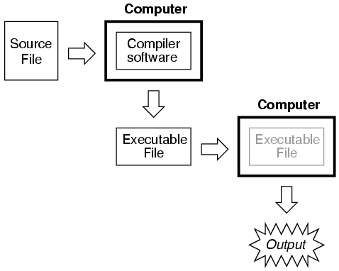
SPICE es un lenguaje interpretado. Para que una computadora pueda entender las instrucciones SPICE que usted escribe, debe tener instalado el programa SPICE (intérprete):
Los archivos fuente de SPICE se denominan comúnmente "netlists", aunque a veces se les conoce como "mazos" y cada línea del archivo se denomina "tarjeta". Lindo, ¿no crees? Las listas de red las crea una persona como usted escribiendo instrucciones línea por línea usando un procesador de textos o un editor de texto. Los editores de texto son mucho más preferidos que los procesadores de texto para cualquier tipo de programación informática, ya que producen texto ASCII puro sin códigos especiales incorporados para resaltar texto (comoitálico or negritafuentes), que no son interpretables por el software de interpretación y compilación.
Como en la programación general, el archivo fuente que cree para SPICE debe seguir ciertas convenciones de programación. Es un lenguaje informático en sí mismo, aunque simple. Habiendo programado en BASIC y C/C++, y teniendo algo de experiencia leyendo programas PASCAL y FORTRAN, es mi opinión que el lenguaje de SPICE es mucho más simple que cualquiera de estos. Tiene aproximadamente la misma complejidad que un lenguaje de marcado como HTML, quizás menos.
Hay un ciclo de pasos a seguir al usar SPICE para analizar un circuito. El ciclo comienza cuando invocas por primera vez el programa de edición de texto y haces tu primer borrador de la lista de redes. El siguiente paso es ejecutar SPICE en esa nueva lista de redes y ver cuáles son los resultados. Si es un usuario novato de SPICE, sus primeros intentos de crear una buena lista de redes estarán plagados de pequeños errores de sintaxis. No se preocupe: como todo programador informático sabe, el dominio se consigue con mucha práctica. Si su ejecución de prueba produce mensajes de error o resultados que son obviamente incorrectos, deberá volver a invocar el programa de edición de texto y modificar la lista de redes. Después de modificar la lista de redes, debe ejecutar SPICE nuevamente y verificar los resultados. La secuencia, entonces, se parece a esto:
- Redacte una nueva lista de redes con un programa de edición de texto. Guarde esa lista de red en un archivo con el nombre que elija.
- Ejecute SPICE en esa lista de redes y observe los resultados.
- Si los resultados contienen errores, inicie nuevamente el programa de edición de texto y modifique la lista de redes.
- Ejecute SPICE nuevamente y observe los nuevos resultados.
- Si todavía hay errores en la salida de SPICE, vuelva a editar la lista de redes con el programa de edición de texto. Repita este ciclo de edición/ejecución tantas veces como sea necesario hasta obtener los resultados deseados.
- Una vez que haya "depurado" su lista de redes y esté obteniendo buenos resultados, ejecute SPICE nuevamente, solo que esta vez redirija la salida a un nuevo archivo en lugar de simplemente observarlo en la pantalla de la computadora.
- Iniciar un programa de edición de textoorun programa procesador de textos y abra el archivo de salida SPICE que acaba de crear. Modifique ese archivo para adaptarlo a sus necesidades de formato y guarde esos cambios en el disco o imprímalos en papel.
Para "ejecutar" un "programa" SPICE, debe escribir un comando en la interfaz del indicador de terminal, como el que se encuentra en MS-DOS, UNIX o la opción de indicador de DOS de MS-Windows:
spice < example.cir
La palabra "spice" invoca el programa de interpretación SPICE (¡siempre que el software SPICE haya sido instalado en la computadora!), el símbolo "<" redirige el contenido del archivo fuente al intérprete SPICE, yejemplo.cires el nombre del archivo fuente para este ejemplo de circuito. La extensión del archivo ".cir" no es obligatorio; he visto ".inp" (para "entrada") y simplemente ".TXT" también funciona bien. Funcionará incluso cuando el archivo netlist no tenga extensión. A SPICE no le importa cómo le llame, siempre y cuando tenga un nombre compatible con el sistema de archivos de su computadora (para máquinas MS-DOS antiguas, por ejemplo, el nombre del archivo no debe tener más de 8 caracteres de longitud, con una extensión de 3 caracteres y sin espacios ni otros caracteres no alfanuméricos).
Cuando se escribe este comando, SPICE leerá el contenido delejemplo.cirarchivo, analiza el circuito especificado por ese archivo y envía un informe de texto a la salida estándar del terminal de la computadora (generalmente la pantalla, donde puedes verlo desplazarse). Una salida típica de SPICE consta de varias pantallas de información, por lo que es posible que desees revisarla con una ligera modificación del comando:
spice < example.cir | more
Esta alternativa "canaliza" la salida de texto de SPICE a la utilidad "más", que permite mostrar sólo una página a la vez. Lo que esto significa (en inglés) es que la salida de texto de SPICE se detiene después de una pantalla completa y espera hasta que el usuario presiona una tecla del teclado para mostrar la siguiente pantalla llena de texto. Si solo está probando su archivo de circuito de ejemplo y desea verificar si hay errores, esta es una buena manera de hacerlo.
spice < example.cir > example.txt
Esta segunda alternativa (arriba) redirige la salida de texto de SPICE a otro archivo, llamadoejemplo.txt, donde se puede ver o imprimir. Esta opción corresponde al último paso del ciclo de desarrollo mencionado anteriormente. Este autor recomienda que utilice esta técnica de "redirección" a un archivo de texto sólo después de haber demostrado que su lista de circuitos de ejemplo funciona bien, para no perder tiempo invocando un editor de texto sólo para ver el resultado durante las etapas de "depuración".
Una vez que tenga una salida SPICE almacenada en un.TXTarchivo, puede usar un editor de texto o (¡mejor aún!) un procesador de textos para editar el resultado, eliminando cualquier banner y mensaje innecesario, incluso especificando fuentes alternativas para resaltar los títulos y/o datos para una apariencia más pulida. Luego, por supuesto, puede imprimir el resultado en papel si así lo desea. Dado que la salida directa de SPICE es texto ASCII plano, dicho archivo será universalmente interpretable en cualquier computadora, ya sea que SPICE esté instalado o no. Además, el formato de texto plano garantiza que el archivo será muy pequeño en comparación con los archivos de capturas de pantalla gráficas generados por los simuladores de "apuntar y hacer clic".
El formato de archivo netlist requerido por SPICE es bastante simple. Un archivo netlist no es más que un archivo de texto ASCII plano que contiene varias líneas de texto, cada una de las cuales describe un componente del circuito o un comando especial de SPICE. La arquitectura del circuito se especifica asignando números a los puntos de conexión de cada componente en cada línea, conexiones entre componentes designadas por números comunes. Examine el siguiente diagrama de circuito de ejemplo y su correspondiente archivo SPICE. Tenga en cuenta que el diagrama del circuito existe únicamente para facilitar la comprensión de la simulación por parte de los seres humanos. SPICE sólo entiende las listas de red:
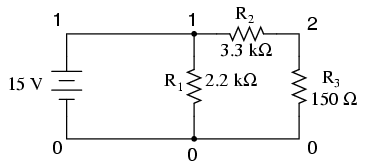
Example netlist v1 1 0 dc 15 r1 1 0 2.2k r2 1 2 3.3k r3 2 0 150 .end
Cada línea del archivo fuente que se muestra arriba se explica aquí:
- v1representa la batería (fuente de voltaje 1), terminal positivo numerado 1, terminal negativo numerado 0, con una salida de voltaje CC de 15 voltios.
- r1representa la resistencia R1en el diagrama, conectado entre los puntos 1 y 0, con un valor de 2,2 kΩ.
- r2representa la resistencia R2en el diagrama, conectado entre los puntos 1 y 2, con un valor de 3,3 kΩ.
- r3representa la resistencia R3en el diagrama, conectado entre los puntos 2 y 0, con un valor de 150 kΩ.
Los puntos eléctricamente comunes (o "nodos") en la descripción de un circuito SPICE comparten números comunes, de la misma manera que los cables que conectan puntos comunes en un circuito grande generalmente comparten etiquetas de cables comunes.
Para simular este circuito, el usuario escribiría esas seis líneas de texto en un editor de texto y las guardaría como un archivo con un nombre único (comoejemplo.cir). Una vez que la lista de red está compuesta y guardada en un archivo, el usuario procesa ese archivo con una de las declaraciones de línea de comando mostradas anteriormente (especia < ejemplo.cir), y recibirán este texto en la pantalla de su computadora:
1*******10/10/99 ******** spice 2g.6 3/15/83 ********07:32:42*****
0example netlist
0**** input listing temperature = 27.000 deg c
v1 1 0 dc 15
r1 1 0 2.2k
r2 1 2 3.3k
r3 2 0 150
.end
*****10/10/99 ********* spice 2g.6 3/15/83 ******07:32:42******
0example netlist
0**** small signal bias solution temperature = 27.000 deg c
node voltage node voltage
( 1) 15.0000 ( 2) 0.6522
voltage source currents
name current
v1 -1.117E-02
total power dissipation 1.67E-01 watts
job concluded
0 total job time 0.02
1*******10/10/99 ******** spice 2g.6 3/15/83 ******07:32:42*****
0**** input listing temperature = 27.000 deg c
SPICE comienza imprimiendo la hora, fecha y versión utilizada en la parte superior del resultado. Luego enumera los parámetros de entrada (las líneas del archivo fuente), seguido de una visualización de las lecturas de voltaje de CC desde cada nodo (número de referencia) a tierra (siempre número de referencia 0). A esto le sigue una lista de lecturas de corriente a través de cada fuente de voltaje (en este caso solo hay una, v1). Finalmente, se imprime la disipación total de energía y el tiempo de cálculo en segundos.
Todos los valores de salida proporcionados por SPICE se muestran en notación científica.
La lista de resultados de SPICE que se muestra arriba es un poco detallada para el gusto de la mayoría de las personas. Para una presentación final, sería bueno recortar todo el texto innecesario y dejar solo lo importante. Aquí hay una muestra del mismo resultado, redirigido a un archivo de texto (especia < ejemplo.cir > ejemplo.txt), luego se recortó juiciosamente con un editor de texto para la presentación final y se imprimió:
example netlist v1 1 0 dc 15 r1 1 0 2.2k r2 1 2 3.3k r3 2 0 150 .end
node voltage node voltage ( 1) 15.0000 ( 2) 0.6522
voltage source currents name current v1 -1.117E-02
total power dissipation 1.67E-01 watts
Una de las cosas buenas de SPICE es que tanto el formato de entrada como el de salida son texto sin formato, que es el formato electrónico más universal y fácil de editar que existe. PrácticamenteanyLa computadora podrá editar y mostrar este formato, incluso si el programa SPICE en sí no reside en esa computadora. Si el usuario lo desea, es libre de utilizar las capacidades avanzadas de los programas de procesamiento de textos para que el resultado parezca más elegante. Incluso se pueden insertar comentarios entre líneas del resultado para mayor claridad para el lector.
The command-line interface
Si ha utilizado sistemas operativos DOS o UNIX antes en un entorno de shell de línea de comandos, puede preguntarse por qué tenemos que usar el símbolo "<" entre la palabra "spice" y el nombre del archivo netlist a interpretar. ¿Por qué no simplemente ingresar el nombre del archivo como primer argumento del comando "spice" como lo hacemos cuando invocamos el editor de texto? La respuesta es que SPICE tiene la opción de uninteractivomodo, mediante el cual cada línea de la lista de red se puede interpretar a medida que se ingresa a través de la entrada estándar (stdin) de la computadora. Si simplemente escribe "especia" cuando se le solicite y presiona[Ingresar], SPICE comenzará a interpretar todo lo que escriba (en vivo).
Para la mayoría de las aplicaciones, es bueno guardar el trabajo de su lista de red en un archivo separado y luego dejar que SPICE interprete ese archivo cuando esté listo. Esta es la forma en que recomiendo que se utilice SPICE, y así es como se presenta en esta lección. Para usar SPICE de esta manera en un entorno de línea de comandos, necesitamos usar el símbolo de redirección "<" para dirigir el contenido de su archivo netlist a la entrada estándar (stdin), que luego SPICE puede procesar.
Circuit components
Recuerde que este tutorial no es exhaustivo de ninguna manera y que todas las descripciones de los elementos en el lenguaje SPICE están documentadas aquí en forma condensada. SPICE es un software muy capaz con muchas opciones y sólo voy a documentar algunas de ellas.
AllLos componentes en un archivo fuente SPICE se identifican principalmente por la primera letra en cada línea respectiva. Los caracteres que siguen a la letra de identificación se utilizan para distinguir un componente de un determinado tipo de otro del mismo tipo (r1, r2, r3, rload, rpullup, etc.) y no necesitan seguir ninguna convención de nomenclatura particular, siempre que no se utilicen más de ocho caracteres tanto en la letra de identificación del componente como en el nombre distintivo.
Por ejemplo, suponga que está simulando un circuito digital con resistencias "pullup" y "pulldown". el nombrepullupsería válido porque tiene siete caracteres. el nombredesplegable, sin embargo, tiene nueve caracteres. Esto puede causar problemas cuando SPICE interpreta la lista de redes.
De hecho, puede salirse con la suya con nombres de componentes que superen los ocho caracteres en total si no hay otros componentes con nombres similares en el archivo fuente. SPICE sólo presta atención a los primeros ocho caracteres del primer campo de cada línea, por lo quedesplegableen realidad se interpreta comorpulldowignorando la "n" al final. Por lo tanto, SPICE considerará cualquier otra resistencia que tenga los primeros ocho caracteres en su primer campo como la misma resistencia, definida dos veces, lo que provocará un error (es decir,rpulldown1 and rpulldown2se interpretaría como el mismo nombre,rpulldow).
También debe tenerse en cuenta que SPICE ignora mayúsculas y minúsculas, por lo quer1 and R1son interpretados por SPICE como uno y el mismo.
SPICE permite el uso de prefijos métricos para especificar valores de componentes, lo cual es una característica muy útil. Sin embargo, la convención de prefijo utilizada por SPICE difiere algo de los símbolos métricos estándar, principalmente debido al hecho de que las netlists están restringidas a caracteres ASCII estándar (descartando letras griegas como µ para el prefijo "micro") y que SPICE no distingue entre mayúsculas y minúsculas, por lo que "m" (que es el símbolo estándar de "milli") y "M" (que es el símbolo estándar de "Mega") se interpretan de manera idéntica. A continuación se muestran algunos ejemplos de prefijos utilizados en las netlists de SPICE:
r1 1 0 2t(Resistencia R1, 2t = 2 Tera-ohmios = 2 TΩ)
r2 1 0 4g(Resistencia R2, 4g = 4 Giga-ohmios = 4 GΩ)
r3 1 0 47meg(Resistencia R3, 47 megas = 47 megaohmios = 47 MΩ)
r4 1 0 3.3k(Resistencia R4, 3,3k = 3,3 kiloohmios = 3,3 kΩ)
r5 1 0 55m(Resistencia R5, 55 m = 55 miliohmios = 55 mΩ)
r6 1 0 10u(Resistencia R6, 10u = 10 microohmios 10 µΩ)
r7 1 0 30n(Resistencia R7, 30n = 30 nanoohmios = 30 nΩ)
r8 1 0 5p(Resistencia R8, 5p = 5 picoohmios = 5 pΩ)
r9 1 0 250f(Resistencia R9, 250f = 250 femtoohmios = 250 fΩ)
También se permite la notación científica al especificar los valores de los componentes. Por ejemplo:
r10 1 0 4.7e3(Resistencia R10, 4,7e3 = 4,7 x 103 ohms = 4.7 kilo-ohms = 4.7 kΩ)
r11 1 0 1e-12(Resistencia R11, 1e-12 = 1 x 10-12 ohms = 1 pico-ohm = 1 pΩ)
La unidad (ohmios, voltios, faradios, henrys, etc.) se determina automáticamente según el tipo de componente que se especifica. SPICE "sabe" que todos los ejemplos anteriores son "ohmios" porque todos son resistencias (r1, r2, r3,...). Si fueran condensadores, los valores se interpretarían como "faradios", si fueran inductores, entonces "henrys", etc.
Passive components
CAPACITORS
General form: c[name] [node1] [node2] [value] ic=[initial voltage] Example 1: c1 12 33 10u Example 2: c1 12 33 10u ic=3.5
Comentarios:La "condición inicial" (ic=) la variable es el voltaje del capacitor en unidades devoltiosal inicio del análisis DC. Es un valor opcional, y se supone que el voltaje de arranque es cero si no se especifica. SPICE interpreta los valores de corriente de arranque para capacitores solo si el.tranSe invoca la opción de análisis (con el "uic" opción).
INDUCTORS
General form: l[name] [node1] [node2] [value] ic=[initial current] Example 1: l1 12 33 133m Example 2: l1 12 33 133m ic=12.7m
Comentarios:La "condición inicial" (ic=) la variable es la corriente del inductor en unidades deamperiosal inicio del análisis DC. Es un valor opcional, y se supone que la corriente de arranque es cero si no se especifica. SPICE interpreta los valores de corriente inicial para inductores solo si se invoca la opción de análisis .tran.
INDUCTOR COUPLING (transformers)
General form: k[name] l[name] l[name] [coupling factor] Example 1: k1 l1 l2 0.999
Comentarios:SPICE solo permitirá valores de factor de acoplamiento entre 0 y 1 (no inclusivos), donde 0 representa ningún acoplamiento y 1 representa un acoplamiento perfecto. El orden de especificación de los inductores acoplados (l1, l2 o l2, l1) es irrelevante.
RESISTORS
General form: r[name] [node1] [node2] [value] Example: rload 23 15 3.3k
Comentarios:En caso de que se lo pregunte, no existe una declaración de clasificación de disipación de potencia de resistencia en SPICE. Se supone que todos los componentes son indestructibles. ¡Si tan solo la vida real fuera tan indulgente!
Active components
Todos los componentes semiconductores deben tener sus características eléctricas descritas en una línea que comience con la palabra ".modelo", que le dice a SPICE exactamente cómo se comportará el dispositivo. Cualquier parámetro que no esté definido explícitamente en el.modeloLa tarjeta utilizará de forma predeterminada los valores preprogramados en SPICE. Sin embargo, el.modelotarjetadebeincluirse y al menos especificar el nombre del modelo y el tipo de dispositivo (d, npn, pnp, njf, pjf, nmos o pmos).
DIODES
General form: d[name] [anode] [cathode] [model] Example: d1 1 2 mod1
MODELOS DE DIODO:
General form: .model [modelname] d [parmtr1=x] [parmtr2=x] . . . Example: .model mod1 d Example: .model mod2 d vj=0.65 rs=1.3
Definiciones de parámetros:
is= corriente de saturación en amperios
rs= resistencia de unión en ohmios
n= coeficiente de emisión (sin unidades)
tt= tiempo de tránsito en segundos
cjo= capacitancia de unión de polarización cero en faradios
vj= potencial de unión en voltios
m= coeficiente de calificación (sin unidades)
eg= energía de activación en electronvoltios
xti= exponente de temperatura de corriente de saturación (sin unidades)
kf= coeficiente de ruido de parpadeo (sin unidades)
af= exponente del ruido de parpadeo (sin unidades)
fc= coeficiente de capacitancia de agotamiento de polarización directa (sin unidades)
bv= tensión de ruptura inversa en voltios
ibv= corriente a voltaje de ruptura en amperios
Comentarios:El nombre del modelodebecomience con una letra, no con un número. Si planea especificar un modelo para un diodo rectificador 1N4003, por ejemplo, no puede usar "1n4003" como nombre del modelo. Una alternativa podría ser "m1n4003".
TRANSISTORS, bipolar junction -- BJT
General form: q[name] [collector] [base] [emitter] [model] Example: q1 2 3 0 mod1
MODELOS DE TRANSISTORES BJT:
General form: .model [modelname] [npn or pnp] [parmtr1=x] . . . Example: .model mod1 pnp Example: .model mod2 npn bf=75 is=1e-14
Los ejemplos de modelos que se muestran arriba son muy inespecíficos. Para modelar con precisión los transistores de la vida real, se necesitan más parámetros. Tomemos estos dos ejemplos, para los populares transistores 2N2222 y 2N2907 (los "+") los caracteres representan marcas de continuación de línea en SPICE, cuando desea dividir una sola línea (tarjeta) en dos o más líneas separadas en su editor de texto:
Example: .model m2n2222 npn is=19f bf=150 vaf=100 ikf=.18 + ise=50p ne=2.5 br=7.5 var=6.4 ikr=12m + isc=8.7p nc=1.2 rb=50 re=0.4 rc=0.4 cje=26p + tf=0.5n cjc=11p tr=7n xtb=1.5 kf=0.032f af=1
Example: .model m2n2907 pnp is=1.1p bf=200 nf=1.2 vaf=50 + ikf=0.1 ise=13p ne=1.9 br=6 rc=0.6 cje=23p + vje=0.85 mje=1.25 tf=0.5n cjc=19p vjc=0.5 + mjc=0.2 tr=34n xtb=1.5
Definiciones de parámetros:
is= corriente de saturación de transporte en amperios
bf= Beta directa máxima ideal (sin unidades)
nf= coeficiente de emisión actual directo (sin unidades)
vaf= voltaje inicial directo en voltios
ikf= esquina para la reducción de alta corriente Beta directa en amperios
ise= Corriente de saturación de fuga B-E en amperios
ne= Coeficiente de emisión de fugas B-E (sin unidades)
br= Beta inversa máxima ideal (sin unidades)
nr= coeficiente de emisión de corriente inversa (sin unidades)
bar= voltaje inicial inverso en voltios
ikrikr = corner for reverse Beta high-current rolloff in amps
iscisc = B-C leakage saturation current in amps
nc= Coeficiente de emisión de fugas B-C (sin unidades)
rb= resistencia de base de polarización cero en ohmios
irb= corriente para el valor medio de la resistencia base en amperios
rbm= resistencia de base mínima a corrientes altas en ohmios
re= resistencia del emisor en ohmios
rc= resistencia del colector en ohmios
cje= Capacitancia de agotamiento de polarización cero B-E en faradios
vje= potencial incorporado B-E en voltios
mje= factor exponencial de la unión B-E (sin unidades)
tf= tiempo de tránsito ideal hacia adelante (segundos)
xtf= coeficiente de dependencia del sesgo del tiempo de tránsito (sin unidades)
vtf= Dependencia del voltaje B-C del tiempo de tránsito, en voltios
itf= efecto del parámetro de alta corriente en el tiempo de tránsito, en amperios
ptf= exceso de fase en f=1/(tiempo de tránsito)(2)(pi) Hz, en grados
cjc= Capacitancia de agotamiento de polarización cero B-C en faradios
vjc= potencial incorporado B-C en voltios
mjc= factor exponencial de la unión B-C (sin unidades)
xjcj= Fracción de capacitancia de agotamiento B-C conectada en el nodo base (sin unidades)
tr= tiempo ideal de tránsito inverso en segundos
cjs= capacitancia colector-sustrato de polarización cero en faradios
vjs= potencial incorporado de la unión del sustrato en voltios
mjs= factor exponencial de unión del sustrato (sin unidades)
xtb= exponente de temperatura Beta directo/inverso
eg= brecha de energía para el efecto de la temperatura en la corriente de saturación del transporte en electronvoltios
xti= exponente de temperatura para el efecto sobre la corriente de saturación del transporte (sin unidades)
kf= coeficiente de ruido de parpadeo (sin unidades)
af= exponente del ruido de parpadeo (sin unidades)
fc= coeficiente de fórmula de capacitancia de agotamiento de polarización directa (sin unidades)
Comentarios:Al igual que con los diodos, el nombre del modelo asignado a un tipo de transistor en particulardebecomience con una letra, no con un número. Es por eso que los ejemplos dados anteriormente para los tipos de BJT 2N2222 y 2N2907 se denominan "m2n2222" y "q2n2907" respectivamente.
Como puede ver, SPICE permite una especificación muy detallada de las propiedades del transistor. Muchas de las propiedades enumeradas anteriormente están más allá del alcance y el interés del estudiante principiante de electrónica, y ni siquiera son útiles aparte de conocer las ecuaciones que SPICE usa para modelar transistores BJT. Para aquellos interesados en aprender más sobre el modelado de transistores en SPICE, consulte otros libros, como el de Andrei Vladimirescu.El libro de las especias(ISBN 0-471-60926-9).
JFET, junction field-effect transistor
General form: j[name] [drain] [gate] [source] [model] Example: j1 2 3 0 mod1
MODELOS DE TRANSISTOR JFET:
General form: .model [modelname] [njf or pjf] [parmtr1=x] . . . Example: .model mod1 pjf Example: .model mod2 njf lambda=1e-5 pb=0.75
Definiciones de parámetros:
vto= tensión umbral en voltios
beta= parámetro de transconductancia en amperios/voltios2
lambda= parámetro de modulación de longitud del canal en unidades de 1/voltios
rd= resistencia al drenaje en ohmios
rs= resistencia de la fuente en ohmios
cgs= capacitancia de unión G-S de polarización cero en faradios
cgd= capacitancia de unión G-D de polarización cero en faradios
pb= potencial de unión de puerta en voltios
is= corriente de saturación de la unión de la puerta en amperios
kf= coeficiente de ruido de parpadeo (sin unidades)
af= exponente del ruido de parpadeo (sin unidades)
fc= coeficiente de capacitancia de agotamiento de polarización directa (sin unidades)
MOSFET, transistor
General form: m[name] [drain] [gate] [source] [substrate] [model] Example: m1 2 3 0 0 mod1
MODELOS DE TRANSISTORES MOSFET:
General form: .model [modelname] [nmos or pmos] [parmtr1=x] . . . Example: .model mod1 pmos Example: .model mod2 nmos level=2 phi=0.65 rd=1.5 Example: .model mod3 nmos vto=-1 (depletion) Example: .model mod4 nmos vto=1 (enhancement) Example: .model mod5 pmos vto=1 (depletion) Example: .model mod6 pmos vto=-1 (enhancement)
Comentarios:Para distinguir entre transistores en modo de mejora y en modo de agotamiento (también conocido como modo de mejora de agotamiento), el parámetro del modelo "vto" (voltaje umbral de polarización cero) debe especificarse. Su valor predeterminado es cero, pero un valor positivo (+1 voltios, por ejemplo) en un transistor de canal P o un valor negativo (-1 voltios) en un transistor de canal N especificará que ese transistor sea unagotamiento(también conocido comomejora del agotamiento) mododispositivo. Por el contrario, un valor negativo en un transistor de canal P o un valor positivo en un transistor de canal N especificará que ese transistor sea unmodo de mejoradispositivo.
Recuerde que los transistores en modo de mejora son dispositivos normalmente apagados y deben encenderse mediante la aplicación de voltaje de puerta. Los transistores en modo de agotamiento normalmente están "encendidos", pero pueden "apagarse" y mejorarse a mayores niveles de corriente de drenaje mediante el voltaje de puerta aplicado, de ahí la designación alternativa de MOSFET de "mejora de agotamiento". El "vto"El parámetro especifica el voltaje de puerta umbral para la conducción MOSFET.
Sources
FUENTES DE VOLTAJE DE ONDA SINUSoidal CA (cuando se utiliza la tarjeta .ac para especificar la frecuencia):
General form: v[name] [+node] [-node] ac [voltage] [phase] sin Example 1: v1 1 0 ac 12 sin Example 2: v1 1 0 ac 12 240 sin (12 V ∠ 240o)
Comentarios:Este método de especificar fuentes de voltaje de CA funciona bien si utiliza varias fuentes con diferentes ángulos de fase entre sí, pero todas a la misma frecuencia. Si necesita especificar fuentes en diferentes frecuencias en el mismo circuito, debe utilizar el siguiente método.
FUENTES DE VOLTAJE DE ONDA SINUSoidal DE CA (cuando NO se utiliza la tarjeta .ac para especificar la frecuencia):
General form: v[name] [+node] [-node] sin([offset] [voltage] + [freq] [delay] [damping factor]) Example 1: v1 1 0 sin(0 12 60 0 0)
Definiciones de parámetros:
compensar= voltaje de polarización de CC, que compensa la forma de onda de CA en un voltaje específico.
Voltaje= valor de voltaje CA pico o cresta para la forma de onda.
frecuencia= frecuencia en Hercios.
demora= retardo de tiempo, o desplazamiento de fase de la forma de onda, en segundos.
factor de amortiguación= una figura utilizada para crear formas de onda de amplitud decreciente.
Comentarios:Este método de especificar fuentes de voltaje de CA funciona bien si utiliza varias fuentes a diferentes frecuencias entre sí. Sin embargo, representar el cambio de fase es complicado y requiere el uso de lademorafactor.
FUENTES DE VOLTAJE DE CC (cuando se utiliza una tarjeta .dc para especificar el voltaje):
General form: v[name] [+node] [-node] dc Example 1: v1 1 0 dc
Comentarios:Si desea tener voltajes de salida SPICEnoten referencia al nodo 0, debe utilizar el.dcopción de análisis y, para utilizar esta opción, debe especificar al menos una de sus fuentes de DC de esta manera.
FUENTES DE VOLTAJE DE CC (cuando NO se utiliza la tarjeta .dc para especificar el voltaje):
General form: v[name] [+node] [-node] dc [voltage] Example 1: v1 1 0 dc 12
Comentarios:¡Nada digno de mención aquí!
FUENTES DE TENSIÓN DE PULSOS
General form: v[name] [+node] [-node] pulse ([i] [p] [td] [tr] + [tf] [pw] [pd])
Definiciones de parámetros:
i= valor inicial
p= valor del pulso
td= tiempo de retardo (todos los parámetros de tiempo en unidades de segundos)
tr= tiempo de subida
tf= tiempo de caída
pw= ancho de pulso
pd= período
Example 1: v1 1 0 pulse (-3 3 0 0 0 10m 20m)
Comentarios:El ejemplo 1 es una onda cuadrada perfecta que oscila entre -3 y +3 voltios, con tiempos de subida y bajada cero, un período de 20 milisegundos y un ciclo de trabajo del 50 por ciento (+3 voltios durante 10 ms, luego -3 voltios durante 10 ms).
FUENTES DE CORRIENTE DE ONDA SINUSICOCA (cuando se usa una tarjeta .ac para especificar la frecuencia):
General form: i[name] [+node] [-node] ac [current] [phase] sin Example 1: i1 1 0 ac 3 sin (3 amps) Example 2: i1 1 0 ac 1m 240 sin (1 mA ∠ 240o)
Comentarios:Los mismos comentarios se aplican aquí (y en el siguiente ejemplo) que para las fuentes de voltaje CA.
FUENTES DE CORRIENTE DE ONDA SINUSoidal CA (cuando NO se utiliza la tarjeta .ac para especificar la frecuencia):
General form: i[name] [+node] [-node] sin([offset] + [current] [freq] 0 0) Example 1: i1 1 0 sin(0 1.5 60 0 0)
FUENTES DE CORRIENTE DC (cuando se usa una tarjeta .dc para especificar la corriente):
General form: i[name] [+node] [-node] dc Example 1: i1 1 0 dc
FUENTES DE CORRIENTE DC (cuando NO se usa la tarjeta .dc para especificar la corriente):
General form: i[name] [+node] [-node] dc [current] Example 1: i1 1 0 dc 12
Comentarios:Aunque todos los libros dicen que el primer nodo dado para la fuente de corriente continua es el nodo positivo, eso no es lo que he encontrado en la práctica. En realidad, una fuente de corriente CC en SPICE empuja la corriente en la misma dirección que lo haría una fuente de voltaje (batería) con sunegativonodo especificado primero.
FUENTES DE CORRIENTE DE PULSO
General form: i[name] [+node] [-node] pulse ([i] [p] [td] [tr] + [tf] [pw] [pd])
Definiciones de parámetros:
i= valor inicial
p= valor del pulso
td= tiempo de retraso
tr= tiempo de subida
tf= tiempo de caída
pw= ancho de pulso
pd= período
Example 1: i1 1 0 pulse (-3m 3m 0 0 0 17m 34m)
Comentarios:El ejemplo 1 es una onda cuadrada perfecta que oscila entre -3 mA y +3 mA, con tiempos de subida y bajada cero, un período de 34 milisegundos y un ciclo de trabajo del 50 por ciento (+3 mA durante 17 ms, luego -3 mA durante 17 ms).
FUENTES DE TENSIÓN (dependiente):
General form: e[name] [out+node] [out-node] [in+node] [in-node] + [gain] Example 1: e1 2 0 1 2 999k
Comentarios:Las fuentes de voltaje dependientes son excelentes para simular amplificadores operacionales. El ejemplo 1 muestra cómo se configuraría dicha fuente para su uso como seguidor de voltaje, entrada inversora conectada a la salida (nodo 2) para retroalimentación negativa y entrada no inversora en el nodo 1. La ganancia se ha establecido en un valor arbitrariamente alto de 999.000. Sin embargo, una palabra de advertencia: SPICE no reconoce la entrada de una fuente dependiente como una carga, por lo que una fuente de voltaje vinculada únicamente a la entrada de una fuente de voltaje independiente se interpretará como "abierta". Consulte ejemplos de circuitos de amplificador operacional para obtener más detalles al respecto.
FUENTES ACTUALES (dependiente):
Analysis options
ANÁLISIS DE CA:
General form: .ac [curve] [points] [start] [final] Example 1: .ac lin 1 1000 1000
Comentarios:El campo [curva] puede ser "lin" (lineal), "dec" (década) u "oct" (octava), especificando la (no)linealidad del barrido de frecuencia.
ANÁLISIS DE CC:
General form: .dc [source] [start] [final] [increment] Example 1: .dc vin 1.5 15 0.5
Comentarios:La tarjeta .dc es necesaria si desea imprimir o trazar cualquier voltaje entre dos nodos distintos de cero. De lo contrario, el análisis predeterminado de "señal pequeña" solo imprime el voltaje entre cada nodo distinto de cero y el nodo cero.
ANÁLISIS TRANSITORIO:
General form: .tran [increment] [stop_time] [start_time] + [comp_interval] Example 1: .tran 1m 50m uic Example 2: .tran .5m 32m 0 .01m
Comentarios:El ejemplo 1 tiene un tiempo de incremento de 1 milisegundo y un tiempo de parada de 50 milisegundos (cuando solo se especifican dos parámetros, seincremento de tiempo and detener el tiempo, respectivamente). El ejemplo 2 tiene un tiempo de incremento de 0,5 milisegundos, un tiempo de parada de 32 milisegundos, un tiempo de inicio de 0 milisegundos (sin demora en el inicio) y un intervalo de cálculo de 0,01 milisegundos.
El valor predeterminado para la hora de inicio es cero. Análisis transitoriosiemprecomienza en el momento cero, pero el almacenamiento de datos solo tiene lugar entre el tiempo de inicio y el tiempo de finalización. El intervalo de salida de datos es el tiempo de incremento, o (tiempo de parada - tiempo de inicio)/50, el que sea menor. Sin embargo, la variable de intervalo de cálculo se puede utilizar para forzar un intervalo de cálculo más pequeño que cualquiera de los dos. Para recuentos de intervalos totales grandes, elitl5variables en el.opcionesLa tarjeta puede estar configurada con un número mayor. El "uic"La opción le dice a SPICE que "use las condiciones iniciales".
SALIDA DE LA PARCELA:
General form: .plot [type] [output1] [output2] . . . [output n] Example 1: .plot dc v(1,2) i(v2) Example 2: .plot ac v(3,4) vp(3,4) i(v1) ip(v1) Example 3: .plot tran v(4,5) i(v2)
Comentarios:SPICE no puede manejar más de ocho solicitudes de puntos de datos en una sola.trama or .imprimirtarjeta. Si solicita más de ocho puntos de datos, ¡use varias tarjetas!
Además, aquí hay una advertencia importante al usar SPICE versión 3: si está realizando un análisis de CA y le pide a SPICE que trace un voltaje de CA como en el ejemplo n.° 2, elv(3,4)El comando solo generará elrealcomponente de un número complejo de forma rectangular! SPICE versión 2 genera elpolarMagnitud de un número complejo: una cantidad mucho más significativa si solo se pide una cantidad. Para obligar a SPICE3 a que le dé magnitud polar, tendrá que reescribir el.imprimir or .tramaargumento como tal:vm(3,4).
SALIDA DE IMPRESIÓN:
General form: .print [type] [output1] [output2] . . . [output n] Example 1: .print dc v(1,2) i(v2) Example 2: .print ac v(2,4) i(vinput) vp(2,3) Example 3: .print tran v(4,5) i(v2)
Comentarios:SPICE no puede manejar más de ocho solicitudes de puntos de datos en una sola.trama or .imprimirtarjeta. Si solicita más de ocho puntos de datos, ¡use varias tarjetas!
ANÁLISIS DE CUATRO:
General form: .four [freq] [output1] [output2] . . . [output n] Example 1: .four 60 v(1,2)
Comentarios: The .cuatroLa tarjeta se basa en.tranLa carta está presente en algún lugar de la baraja, con los periodos de tiempo adecuados para el análisis de los ciclos adecuados. Además, SPICE puede "colapsar" si un.tramaEl análisis no se realiza junto con el.cuatroanálisis, incluso si todos.tranLos parámetros son técnicamente correctos. Finalmente, el.cuatroLa opción de análisis solo funciona cuando la frecuencia de la fuente de CA se especifica en la línea de la tarjeta de esa fuente, ynoten un.aclínea de opción de análisis.
Es útil incluir una variable de intervalo de cálculo en el.trantarjeta para una mejor precisión del análisis. Se realiza un análisis de Fourier del voltaje o corriente especificado hasta el noveno armónico, siendo la especificación [freq] la frecuencia fundamental o inicial del espectro de análisis.
MISCELÁNEAS:
General form: .options [option1] [option2] Example 1: .options limpts=500 Example 2: .options itl5=0 Example 3: .options method=gear Example 4: .options list Example 5: .options nopage Example 6: .options numdgt=6
Comentarios:Hay muchas opciones que se pueden especificar usando esta tarjeta. Quizás el que más necesitan los usuarios principiantes de SPICE es el "cojea". Al ejecutar una simulación que requiere imprimir o trazar más de 201 puntos, este límite de puntos de cálculo debe aumentarse o, de lo contrario, SPICE finalizará el análisis. El ejemplo dado anteriormente (limpts=500) le dice a SPICE que asigne suficiente memoria para manejar al menos 500 puntos de cálculo en cualquier tipo de análisis especificado (CC, CA o transitorio).
En el ejemplo 2, vemos uniteraciónvariables (itl5) se establece en un valor de 0. En realidad, hay seis variables de iteración diferentes disponibles para la manipulación del usuario. Controlan los límites del ciclo de iteración para la solución de ecuaciones no lineales. la variableitl5establece el número máximo de iteraciones para un análisis transitorio. Similar alcojeavariable,itl5Por lo general, es necesario establecerlo cuando se ha especificado un pequeño intervalo de cálculo en un.trantarjeta. Configuraciónitl5a un valor de 0 desactiva el límite por completo, permitiendo a la computadora ciclos de iteración infinitos (tiempo infinito) para calcular el análisis.Advertencia: ¡esto puede provocar largos tiempos de simulación!
Ejemplo 3 con "method=gear" establece el método de integración numérica utilizado por SPICE. El valor predeterminado es "trapezoide" en lugar de "engranaje", siendo el trapezoide una aproximación geométrica simple del área bajo una curva que se encuentra cortando la curva en trapecios para aproximar la forma. El método del "engranaje" se basa en ecuaciones polinómicas de segundo orden o mejores y lleva el nombre de C.W. Gear (Integración numérica de ecuaciones ordinarias rígidas, Informe 221, Departamento de Ciencias de la Computación, Universidad de Illinois, Urbana). El método de integración Gear es más exigente para la computadora (computacionalmente "caro") y, a veces, dará resultados ligeramente diferentes a los del método trapezoidal.
El "lista"La opción que se muestra en el ejemplo 4 ofrece un resumen detallado de todos los componentes del circuito y sus respectivos valores en el resultado final.
De forma predeterminada, SPICE insertará códigos de control de salto de página ASCII en la salida para separar diferentes secciones del análisis. Especificando el "no páginaLa opción "(ejemplo 5) evitará dicha paginación.
El "entumecidoLa opción "que se muestra en el ejemplo 6 especifica el número de dígitos significativos generados cuando se utiliza uno de los ".imprimir"opciones de salida de datos. SPICE tiene por defecto una precisión de 4 dígitos significativos.
CONTROL DE ANCHO:
General form: .width in=[columns] out=[columns] Example 1: .width out=80
Comentarios: The .anchoLa tarjeta se puede utilizar para controlar el ancho de las líneas de salida de texto durante el análisis. Esto es especialmente útil al trazar gráficos con el.tramatarjeta. El valor predeterminado es 120, lo que puede causar problemas en pantallas de terminales de 80 caracteres a menos que se establezca en 80 con este comando.
Quirks
"Basura entra, basura sale".
Anónimo
SPICE es un software muy confiable, pero tiene sus pequeñas peculiaridades a las que cuesta acostumbrarse. Por "peculiaridad" me refiero a una exigencia que se le impone al usuario para que escriba el archivo fuente de una manera particular para que funcione sin generar mensajes de error. sínotSignifica cualquier tipo de falla con SPICE que pueda producir resultados erróneos o engañosos: sería más apropiado referirse a eso como un "error". Hablando de errores, SPICE también tiene algunos de ellos.
Algunas (o todas) de estas peculiaridades pueden ser exclusivas de SPICE versión 2g6, que es la única versión que he usado ampliamente. Es posible que se hayan solucionado en versiones posteriores.
A good beginning
SPICE exige que el archivo fuente comience con algo distinto a la primera "tarjeta" en la descripción del circuito "mazo". Este primer carácter en el archivo fuente puede ser un salto de línea, una línea de título o un comentario: simplemente tiene que haberalgoallí antes de la primera línea del archivo que especifica el componente. De lo contrario, SPICE se negará a realizar ningún análisis, alegando que hay un error grave (como conexiones de nodos incorrectas) en la "cubierta".
A good ending
SPICE exige que el.finLa línea al final del archivo fuente no debe terminar con un carácter de salto de línea o retorno de carro. En otras palabras, cuando termines de escribir ".fin"No debes golpear el[Ingresar]tecla de su teclado. El cursor en su editor de texto debe detenerse inmediatamente a la derecha de la "d" después de ".fin" y no vayas más lejos. Si no se presta atención a esta peculiaridad, se producirá un "falta la tarjeta .end"mensaje de error al final del resultado del análisis. El análisis del circuito real no se ve afectado por este error, por lo que normalmente ignoro el mensaje. Sin embargo, si busca recibir un resultado "perfecto", debe prestar atención a esta idiosincrasia.
Must have a node 0
Se le da mucha libertad para numerar los nodos del circuito, perodebetenga un nodo 0 en algún lugar de su netlist para que SPICE funcione. El nodo 0 es el nodo predeterminado para la tierra del circuito y es el punto de referencia para todos los voltajes especificados en las ubicaciones de un solo nodo.
Cuando SPICE realiza un análisis de CC simple, la salida contendrá una lista de voltajes en todos los nodos distintos de cero en el circuito. El punto de referencia (tierra) para todas estas lecturas de voltaje es el nodo 0. Por ejemplo:
node voltage node voltage ( 1) 15.0000 ( 2) 0.6522
En este análisis, hay un voltaje CC de 15 voltios entre el nodo 1 y tierra (nodo 0), y un voltaje CC de 0,6522 voltios entre el nodo 2 y tierra (nodo 0). En ambos casos, la polaridad del voltaje es negativa en el nodo 0 con respecto al otro nodo (en otras palabras, tanto el nodo 1 como el 2 son positivos con respecto al nodo 0).
Avoid open circuits
SPICE no puede manejar circuitos abiertos de ningún tipo. Si su netlist especifica un circuito con una fuente de voltaje abierta, por ejemplo, SPICE se negará a realizar un análisis. Un excelente ejemplo de este tipo de error se encuentra al "conectar" una fuente de voltaje a la entrada de una fuente dependiente del voltaje (utilizada para simular un amplificador operacional). SPICE necesita ver una ruta completa para la corriente, por lo que normalmente conecto una resistencia de alto valor (llámelafalso!) a través de la fuente de voltaje para actuar como una carga mínima.
Avoid certain component loops
SPICE no puede manejar ciertos bucles ininterrumpidos de componentes en un circuito, es decir, fuentes de voltaje e inductores. Los siguientes bucles harán que SPICE cancele el análisis:
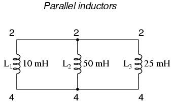
netlist l1 2 4 10m l2 2 4 50m l3 2 4 25m
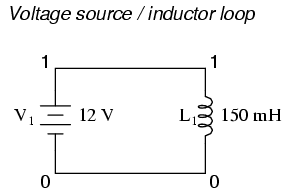
netlist v1 1 0 dc 12 l1 1 0 150m
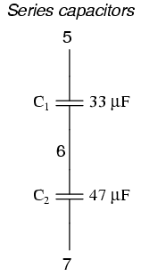
netlist c1 5 6 33u c2 6 7 47u
La razón por la que SPICE no puede manejar estas condiciones se debe a la forma en que realiza el análisis de CC: tratando todos los inductores como cortos y todos los capacitores como abiertos. Dado que los cortocircuitos (0 Ω) y los circuitos abiertos (resistencia infinita) contienen o generan infinitudes matemáticas, una computadora simplemente no puede manejarlos, por lo que SPICE interrumpirá el análisis si se produce alguna de estas condiciones.
Para que estas configuraciones de componentes sean aceptables para SPICE, debe insertar resistencias de valores apropiados en los lugares apropiados, eliminando los respectivos cortocircuitos y circuitos abiertos. Si se requiere una resistencia en serie, elija un valor de resistencia muy bajo. Por el contrario, si se requiere una resistencia en paralelo, elija un valor de resistencia muy alto. Por ejemplo:
Para solucionar el problema del inductor paralelo, inserte una resistencia de muy bajo valor en serie con cada inductor problemático.
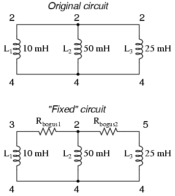
original netlist l1 2 4 10m l2 2 4 50m l3 2 4 25m
fixed netlist rbogus1 2 3 1e-12 rbogus2 2 5 1e-12 l1 3 4 10m l2 2 4 50m l3 5 4 25m
Las resistencias R de extremadamente baja resistenciafalso1y rfalso2(cada uno con apenas 1 pico-ohmio de resistencia) "romper" las conexiones paralelas directas que existían entre L1, L2y l3. Es importante elegir resistencias muy bajas aquí para que el "arreglo" no afecte sustancialmente el funcionamiento del circuito.
Para fijar la fuente de voltaje/bucle inductor, inserte una resistencia de muy bajo valor en serie con los dos componentes.
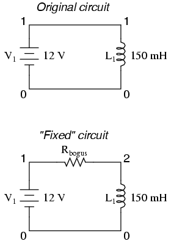
original netlist v1 1 0 dc 12 l1 1 0 150m
fixed netlist v1 1 0 dc 12 l1 2 0 150m rbogus 1 2 1e-12
Como en el ejemplo anterior con inductores en paralelo, es importante hacer que la resistencia de corrección (Rfalso) de muy baja resistencia, para no afectar sustancialmente el funcionamiento del circuito.
Para arreglar el circuito del capacitor en serie, uno de los capacitores debe tener una resistencia en derivación. SPICE requiere una ruta de corriente CC a cada capacitor para su análisis.
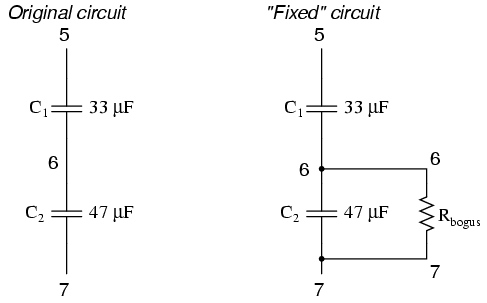
original netlist c1 5 6 33u c2 6 7 47u
fixed netlist c1 5 6 33u c2 6 7 47u rbogus 6 7 9e12
la rfalsoEl valor de 9 Tera-ohmios proporciona una ruta de corriente CC a C.1(y alrededor de C2) sin afectar sustancialmente el funcionamiento del circuito.
Current measurement
Aunque imprimir o trazar el voltaje es bastante fácil en SPICE, la salida de valores actuales es un poco más difícil. Las mediciones de voltaje se especifican declarando los nodos del circuito apropiados. Por ejemplo, si deseamos conocer el voltaje a través de un capacitor cuyos conductores se conectan entre los nodos 4 y 7, podríamos distinguir.imprimirdeclaración se ve así:
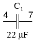
c1 4 7 22u .print ac v(4,7)
Sin embargo, si quisiéramos que SPICE midiera laactuala través de ese condensador, no sería tan fácil. Las corrientes en SPICE deben especificarse en relación con una fuente de voltaje, no con cualquier componente arbitrario. Por ejemplo:
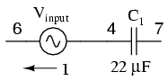
c1 4 7 22u vinput 6 4 ac 1 sin .print ac i(vinput)
Este.imprimirLa tarjeta le indica a SPICE que imprima la corriente a través de la fuente de voltaje V.aporte, que resulta ser la misma que la corriente a través de nuestro capacitor entre los nodos 4 y 7. Pero, ¿qué pasa si no existe tal fuente de voltaje en nuestro circuito como referencia para la medición de corriente? Una solución es insertar una resistencia en derivación en el circuito y medir el voltaje a través de ella. En este caso, he elegido un valor de resistencia en derivación de 1 Ω para producir 1 voltio por amperio de corriente a través de C.1:
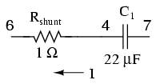
c1 4 7 22u rshunt 6 4 1 .print ac v(6,4)
Sin embargo, la inserción de una resistencia adicional en nuestro circuito lo suficientemente grande como para reducir un voltaje significativo para el rango de corriente previsto podría afectar negativamente las cosas. Una mejor solución para SPICE es esta, aunque nunca se buscaría una solución de medición tan actual en la vida real:
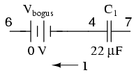
c1 4 7 22u vbogus 6 4 dc 0 .print ac i(vbogus)
Insertar una fuente de voltaje CC "falsa" de cero voltios no afecta en absoluto el funcionamiento del circuito, pero proporciona un lugar conveniente para que SPICE tome una medición de corriente. Curiosamente, no importa que Vfalso¡Es una fuente de CC cuando buscamos medir corriente CA! El hecho de que SPICE genere una lectura de corriente CA está determinado por el "ac"especificación en el.imprimirTarjeta y nada más.
También cabe señalar que la forma en que SPICE asigna una polaridad a las mediciones actuales es un poco extraña. Tome el siguiente circuito como ejemplo:
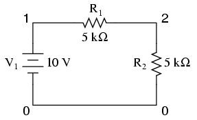
example v1 1 0 r1 1 2 5k r2 2 0 5k .dc v1 10 10 1 .print dc i(v1) .end
Con un voltaje total de 10 voltios y una resistencia total de 10 kΩ, es posible que SPICE le diga que habrá 1 mA (1e-03) de corriente a través de la fuente de voltaje V.1, pero en realidad SPICE generará una cifra denegativo 1 mA (-1e-03)! SPICE regards current out of the negative end of a DC voltage source (the normal direction) to be a negative value of current rather than a positive value of current. There are times I'll throw in a "bogus" voltage source in a DC circuit like this simply to get SPICE to output a positivovalor actual:
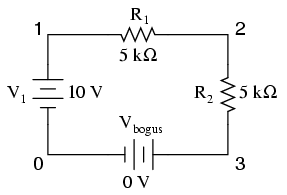
example v1 1 0 r1 1 2 5k r2 2 3 5k vbogus 3 0 dc 0 .dc v1 10 10 1 .print dc i(vbogus) .end
Observe cómo Vfalsoestá colocado de manera que la corriente del circuito entre por su lado positivo (nodo 3) y salga por su lado negativo (nodo 0). Esta orientación asegurará una cifra de salida positiva para la corriente del circuito.
Fourier analysis
Al realizar un análisis de Fourier (dominio de frecuencia) en una forma de onda, encontré que era necesario imprimir o trazar la forma de onda usando el.imprimir or .tramatarjetas, respectivamente. Si no lo imprime ni lo traza, SPICE se detendrá por un momento durante el análisis y luego cancelará el trabajo después de generar la "solución transitoria inicial".
Además, al analizar una onda cuadrada producida por el "legumbres", debe darle a la forma de onda un tiempo finito de subida y bajada, o de lo contrario los resultados del análisis de Fourier serán incorrectos. Por alguna razón, una onda cuadrada perfecta con tiempo de subida/bajada cero produce niveles significativos deinclusoarmónicos según la opción de análisis de Fourier de SPICE, lo cual no es cierto para ondas cuadradas reales.
Example circuits and netlists
Los siguientes circuitos son listas de redes probadas previamente para SPICE 2g6, completas con breves descripciones cuando sea necesario. Siéntase libre de "copiar" y "pegar" cualquiera de las listas de red en su propio archivo fuente SPICE para su análisis y/o modificación. Mi objetivo aquí es doble: dar ejemplos prácticos del diseño de listas de redes SPICE para una mayor comprensión de la sintaxis de las listas de redes SPICE y mostrar cuán simples y compactas pueden ser las listas de redes SPICE al analizar circuitos simples.
Todos los listados de resultados de estos ejemplos han sido "eliminados" de información superflua, brindándole la presentación más concisa posible del resultado de SPICE. Hago esto principalmente para ahorrar espacio en este documento. Los resultados típicos de SPICE contienen muchos encabezados e información resumida que no necesariamente guardan relación con la tarea en cuestión. Así que no se sorprenda cuando ejecute una simulación por su cuenta y descubra que el resultado noexactamente¡Se parece a lo que he mostrado aquí!
Multiple-source DC resistor network, part 1
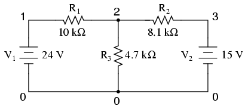
sin un.dctarjeta y un.imprimir or .tramatarjeta, la salida de esta lista de red solo mostrará los voltajes para los nodos 1, 2 y 3 (con referencia al nodo 0, por supuesto).
Lista de redes:
Multiple dc sources v1 1 0 dc 24 v2 3 0 dc 15 r1 1 2 10k r2 2 3 8.1k r3 2 0 4.7k .end
Producción:
node voltage node voltage node voltage ( 1) 24.0000 ( 2) 9.7470 ( 3) 15.0000
voltage source currents name current v1 -1.425E-03 v2 -6.485E-04
total power dissipation 4.39E-02 watts
Multiple-source DC resistor network, part 2
Al agregar un.dctarjeta de análisis y especificación de fuente V1de 24 voltios a 24 voltios en 1 paso (en otras palabras, 24 voltios constantes), podemos usar el.imprimirAnálisis de tarjetas para imprimir voltajes entre dos puntos cualesquiera que deseemos. Por extraño que parezca, cuando el.dcCuando se invoca la opción de análisis, las impresiones de voltaje predeterminadas para cada nodo (a tierra) desaparecen, por lo que terminamos teniendo que especificarlas explícitamente en el.imprimirtarjeta para verlos en absoluto.
Lista de redes:
Multiple dc sources v1 1 0 v2 3 0 15 r1 1 2 10k r2 2 3 8.1k r3 2 0 4.7k .dc v1 24 24 1 .print dc v(1) v(2) v(3) v(1,2) v(2,3) .end
Producción:
v1 v(1) v(2) v(3) v(1,2) v(2,3) 2.400E+01 2.400E+01 9.747E+00 1.500E+01 1.425E+01 -5.253E+00
RC time-constant circuit
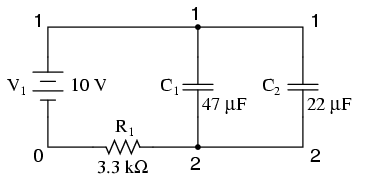
Para el análisis de CC, se deben especificar las condiciones iniciales de cualquier componente reactivo (C o L) (voltaje para condensadores, corriente para inductores). Esto lo proporciona el último campo de datos de cada tarjeta de condensador (ic=0). Para realizar un análisis de CC, el.tran ("transitorio") se debe especificar la opción de análisis, donde el primer campo de datos especifica el incremento de tiempo en segundos, el segundo especifica el tiempo total de análisis en segundos y el "uic" diciéndole que "use las condiciones iniciales" al analizar.
Lista de redes:
RC time delay circuit v1 1 0 dc 10 c1 1 2 47u ic=0 c2 1 2 22u ic=0 r1 2 0 3.3k .tran .05 1 uic .print tran v(1,2) .end
Producción:
time v(1,2) 0.000E+00 7.701E-06 5.000E-02 1.967E+00 1.000E-01 3.551E+00 1.500E-01 4.824E+00 2.000E-01 5.844E+00 2.500E-01 6.664E+00 3.000E-01 7.322E+00 3.500E-01 7.851E+00 4.000E-01 8.274E+00 4.500E-01 8.615E+00 5.000E-01 8.888E+00 5.500E-01 9.107E+00 6.000E-01 9.283E+00 6.500E-01 9.425E+00 7.000E-01 9.538E+00 7.500E-01 9.629E+00 8.000E-01 9.702E+00 8.500E-01 9.761E+00 9.000E-01 9.808E+00 9.500E-01 9.846E+00 1.000E+00 9.877E+00
Plotting and analyzing a simple AC sinewave voltage
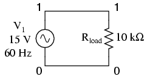
Este ejercicio muestra la configuración adecuada para trazar valores instantáneos de una fuente de voltaje de onda sinusoidal con el.tramafunción (comotransitorioanálisis). No sorprende que el análisis de Fourier en esta baraja también requiera la.tranLa opción de análisis (transitorio) se especificará en un rango de tiempo adecuado. El rango de tiempo en esta baraja en particular permite un análisis de Fourier con una precisión bastante pobre. Cuantos más ciclos de la frecuencia fundamental se realice el análisis transitorio, más preciso será el análisis de Fourier. Esto no es una peculiaridad de SPICE, sino más bien un principio básico de las formas de onda.
Lista de redes:
v1 1 0 sin(0 15 60 0 0) rload 1 0 10k * change tran card to the following for better Fourier precision * .tran 1m 30m .01m and include .options card: * .options itl5=30000 .tran 1m 30m .plot tran v(1) .four 60 v(1) .end
Producción:
time v(1) -2.000E+01 -1.000E+01 0.000E+00 1.000E+01 - - - - - - - - - - - - - - - - - - - - - - - - - - - - - - - - - - 0.000E+00 0.000E+00 . . * . . 1.000E-03 5.487E+00 . . . * . . 2.000E-03 1.025E+01 . . . * . 3.000E-03 1.350E+01 . . . . * . 4.000E-03 1.488E+01 . . . . *. 5.000E-03 1.425E+01 . . . . * . 6.000E-03 1.150E+01 . . . . * . 7.000E-03 7.184E+00 . . . * . . 8.000E-03 1.879E+00 . . . * . . 9.000E-03 -3.714E+00 . . * . . . 1.000E-02 -8.762E+00 . . * . . . 1.100E-02 -1.265E+01 . * . . . . 1.200E-02 -1.466E+01 . * . . . . 1.300E-02 -1.465E+01 . * . . . . 1.400E-02 -1.265E+01 . * . . . . 1.500E-02 -8.769E+00 . . * . . . 1.600E-02 -3.709E+00 . . * . . . 1.700E-02 1.876E+00 . . . * . . 1.800E-02 7.191E+00 . . . * . . 1.900E-02 1.149E+01 . . . . * . 2.000E-02 1.425E+01 . . . . * . 2.100E-02 1.489E+01 . . . . *. 2.200E-02 1.349E+01 . . . . * . 2.300E-02 1.026E+01 . . . * . 2.400E-02 5.491E+00 . . . * . . 2.500E-02 1.553E-03 . . * . . 2.600E-02 -5.514E+00 . . * . . . 2.700E-02 -1.022E+01 . * . . . 2.800E-02 -1.349E+01 . * . . . . 2.900E-02 -1.495E+01 . * . . . . 3.000E-02 -1.427E+01 . * . . . . - - - - - - - - - - - - - - - - - - - - - - - - - - - - - - - - - -
fourier components of transient response v(1) dc component = -1.885E-03 harmonic frequency fourier normalized phase normalized no (hz) component component (deg) phase (deg) 1 6.000E+01 1.494E+01 1.000000 -71.998 0.000 2 1.200E+02 1.886E-02 0.001262 -50.162 21.836 3 1.800E+02 1.346E-03 0.000090 102.674 174.671 4 2.400E+02 1.799E-02 0.001204 -10.866 61.132 5 3.000E+02 3.604E-03 0.000241 160.923 232.921 6 3.600E+02 5.642E-03 0.000378 -176.247 -104.250 7 4.200E+02 2.095E-03 0.000140 122.661 194.658 8 4.800E+02 4.574E-03 0.000306 -143.754 -71.757 9 5.400E+02 4.896E-03 0.000328 -129.418 -57.420 total harmonic distortion = 0.186350 percent
Simple AC resistor-capacitor circuit
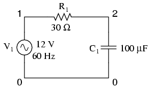
The .acLa tarjeta especifica los puntos de análisis de CA de 60 Hz a 60 Hz, en un solo punto. Esta tarjeta, por supuesto, es un poco más útil para el análisis multifrecuencia, donde se puede analizar un rango de frecuencias en pasos. El.imprimirLa tarjeta genera el voltaje de CA entre los nodos 1 y 2, y el voltaje de CA entre el nodo 2 y tierra.
Lista de redes:
Demo of a simple AC circuit v1 1 0 ac 12 sin r1 1 2 30 c1 2 0 100u .ac lin 1 60 60 .print ac v(1,2) v(2) .end
Producción:
freq v(1,2) v(2) 6.000E+01 8.990E+00 7.949E+00
Low-pass filter
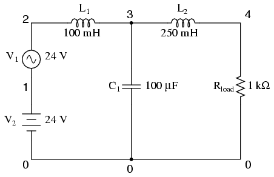
Este filtro de paso bajo bloquea la CA y pasa CC al Rcargaresistor. Típico de un filtro utilizado para suprimir la ondulación de un circuito rectificador, en realidad tiene una frecuencia resonante, lo que técnicamente lo convierte en un filtro de paso de banda. Sin embargo, funciona bien de todos modos para pasar CC y bloquear los armónicos de alta frecuencia generados por el proceso de rectificación de CA a CC. Su rendimiento se mide con una fuente de CA que oscila entre 500 Hz y 15 kHz. Si lo desea, el.imprimirLa tarjeta se puede sustituir o complementar con una.tramatarjeta para mostrar gráficamente el voltaje de CA en el nodo 4.
Lista de redes:
Lowpass filter v1 2 1 ac 24 sin v2 1 0 dc 24 rload 4 0 1k l1 2 3 100m l2 3 4 250m c1 3 0 100u .ac lin 30 500 15k .print ac v(4) .plot ac v(4) .end
freq v(4) 5.000E+02 1.935E-01 1.000E+03 3.275E-02 1.500E+03 1.057E-02 2.000E+03 4.614E-03 2.500E+03 2.402E-03 3.000E+03 1.403E-03 3.500E+03 8.884E-04 4.000E+03 5.973E-04 4.500E+03 4.206E-04 5.000E+03 3.072E-04 5.500E+03 2.311E-04 6.000E+03 1.782E-04 6.500E+03 1.403E-04 7.000E+03 1.124E-04 7.500E+03 9.141E-05 8.000E+03 7.536E-05 8.500E+03 6.285E-05 9.000E+03 5.296E-05 9.500E+03 4.504E-05 1.000E+04 3.863E-05 1.050E+04 3.337E-05 1.100E+04 2.903E-05 1.150E+04 2.541E-05 1.200E+04 2.237E-05 1.250E+04 1.979E-05 1.300E+04 1.760E-05 1.350E+04 1.571E-05 1.400E+04 1.409E-05 1.450E+04 1.268E-05 1.500E+04 1.146E-05
freq v(4) 1.000E-06 1.000E-04 1.000E-02 1.000E+00 - - - - - - - - - - - - - - - - - - - - - - - - - - - - - - - - - - 5.000E+02 1.935E-01 . . . * . 1.000E+03 3.275E-02 . . . * . 1.500E+03 1.057E-02 . . * . 2.000E+03 4.614E-03 . . * . . 2.500E+03 2.402E-03 . . * . . 3.000E+03 1.403E-03 . . * . . 3.500E+03 8.884E-04 . . * . . 4.000E+03 5.973E-04 . . * . . 4.500E+03 4.206E-04 . . * . . 5.000E+03 3.072E-04 . . * . . 5.500E+03 2.311E-04 . . * . . 6.000E+03 1.782E-04 . . * . . 6.500E+03 1.403E-04 . .* . . 7.000E+03 1.124E-04 . * . . 7.500E+03 9.141E-05 . * . . 8.000E+03 7.536E-05 . *. . . 8.500E+03 6.285E-05 . *. . . 9.000E+03 5.296E-05 . * . . . 9.500E+03 4.504E-05 . * . . . 1.000E+04 3.863E-05 . * . . . 1.050E+04 3.337E-05 . * . . . 1.100E+04 2.903E-05 . * . . . 1.150E+04 2.541E-05 . * . . . 1.200E+04 2.237E-05 . * . . . 1.250E+04 1.979E-05 . * . . . 1.300E+04 1.760E-05 . * . . . 1.350E+04 1.571E-05 . * . . . 1.400E+04 1.409E-05 . * . . . 1.450E+04 1.268E-05 . * . . . 1.500E+04 1.146E-05 . * . . . - - - - - - - - - - - - - - - - - - - - - - - - - - - - - - - - - -
Multiple-source AC network
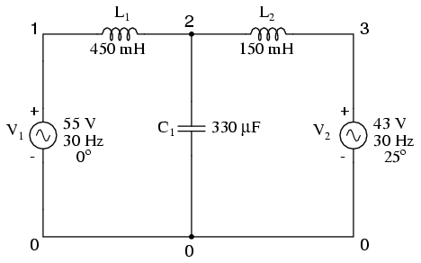
Una de las idiosincrasias de SPICE es su incapacidad para manejar cualquier bucle en un circuito compuesto exclusivamente por inductores y fuentes de voltaje en serie. Por lo tanto, el "bucle" de V1-L1-L2-V2-V1es inaceptable. Para solucionar esto, tuve que insertar unlow-resistencia de resistencia en algún lugar de ese bucle para romperlo. Así, tenemos Rfalsoentre 3 y 4 (con 1 pico-ohmio de resistencia), y V2entre 4 y 0. El circuito de arriba es el diseño original, mientras que el circuito de abajo tiene Rfalsoinsertado para evitar el error SPICE.
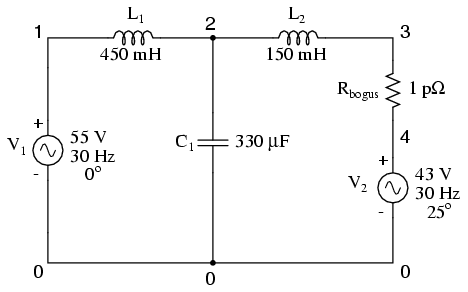
Lista de redes:
Multiple ac source v1 1 0 ac 55 0 sin v2 4 0 ac 43 25 sin l1 1 2 450m c1 2 0 330u l2 2 3 150m rbogus 3 4 1e-12 .ac lin 1 30 30 .print ac v(2) .end
Producción:
freq v(2) 3.000E+01 1.413E+02
AC phase shift demonstration
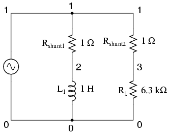
Las corrientes a través de cada tramo están indicadas por las caídas de voltaje a través de cada resistencia en derivación respectiva (1 amperio = 1 voltio a 1 Ω), emitida por elv(1,2) and v(1,3)términos de la.imprimirtarjeta. La fase de las corrientes a través de cada tramo está indicada por la fase de las caídas de voltaje a través de cada resistencia en derivación respectiva, emitida por elvicepresidente(1,2) and vicepresidente(1,3)términos en el.imprimirtarjeta.
Lista de redes:
phase shift v1 1 0 ac 4 sin rshunt1 1 2 1 rshunt2 1 3 1 l1 2 0 1 r1 3 0 6.3k .ac lin 1 1000 1000 .print ac v(1,2) v(1,3) vp(1,2) vp(1,3) .end
Producción:
freq v(1,2) v(1,3) vp(1,2) vp(1,3) 1.000E+03 6.366E-04 6.349E-04 -9.000E+01 0.000E+00
Transformer circuit
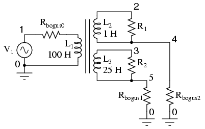
SPICE entiende los transformadores como un conjunto de inductores acoplados entre sí. Por lo tanto, para simular un transformador en SPICE, debe especificar los devanados primario y secundario como inductores separados y luego indicarle a SPICE que los vincule con un "k" tarjeta que especifica la constante de acoplamiento. Para una simulación ideal del transformador, la constante de acoplamiento sería la unidad (1). Sin embargo, SPICE no puede manejar este valor, por lo que usamos algo como 0,999 como factor de acoplamiento.
Tenga en cuenta queallLos pares de inductores devanados deben estar acoplados con sus propiosktarjetas para que la simulación funcione correctamente. Para un transformador de dos devanados, un solokLa tarjeta será suficiente. Para un transformador de tres devanados, treskSe deben especificar las tarjetas (para vincular L1con l2, L2con l3y l1con l3).
la l1/L2La relación de inductancia de 100:1 proporciona una relación de transformación de voltaje reductor de 10:1. Con 120 voltios adentro, deberíamos ver 12 voltios afuera de la L.2devanado. la l1/L3La relación de inductancia de 100:25 (4:1) proporciona una relación de transformación de voltaje reductor de 2:1, lo que debería darnos 60 voltios de la L.3bobinado con 120 voltios en.
Lista de redes:
transformer v1 1 0 ac 120 sin rbogus0 1 6 1e-3 l1 6 0 100 l2 2 4 1 l3 3 5 25 k1 l1 l2 0.999 k2 l2 l3 0.999 k3 l1 l3 0.999 r1 2 4 1000 r2 3 5 1000 rbogus1 5 0 1e10 rbogus2 4 0 1e10 .ac lin 1 60 60 .print ac v(1,0) v(2,0) v(3,0) .end
Producción:
freq v(1) v(2) v(3) 6.000E+01 1.200E+02 1.199E+01 5.993E+01
En este ejemplo, Rfalso0es una resistencia de muy bajo valor que sirve para romper el bucle fuente/inductor de V1/L1. Rfalso1y rfalso2Son resistencias de muy alto valor necesarias para proporcionar rutas de CC a tierra en cada uno de los circuitos aislados. Tenga en cuenta también que un lado del circuito primario está directamente conectado a tierra. ¡Sin estas referencias básicas, SPICE producirá errores!
Full-wave bridge rectifier
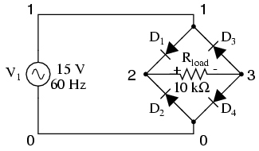
Los diodos, como todos los componentes semiconductores de SPICE, deben modelarse de modo que SPICE conozca todos los detalles esenciales de cómo se supone que deben funcionar. Afortunadamente, SPICE viene con algunos modelos genéricos y el diodo es el más básico. Note el.modelotarjeta que simplemente especifica "d" como modelo de diodo genérico paramod1. Nuevamente, dado que aquí estamos trazando las formas de onda, necesitamos especificar todos los parámetros de la fuente de CA en una sola tarjeta e imprimir/trazar todos los valores usando el.tranopción.
Lista de redes:
fullwave bridge rectifier v1 1 0 sin(0 15 60 0 0) rload 1 0 10k d1 1 2 mod1 d2 0 2 mod1 d3 3 1 mod1 d4 3 0 mod1 .model mod1 d .tran .5m 25m .plot tran v(1,0) v(2,3) .end
Producción:
legend:
*: v(1)
+: v(2,3)
time v(1)
(*)--------- -2.000E+01 -1.000E+01 0.000E+00 1.000E+01 2.000E+01
(+)--------- -5.000E+00 0.000E+00 5.000E+00 1.000E+01 1.500E+01
- - - - - - - - - - - - - - - - - - - - - - - - - - - - - - - - - -
0.000E+00 0.000E+00 . + * . .
5.000E-04 2.806E+00 . . + . * . .
1.000E-03 5.483E+00 . . + * . .
1.500E-03 7.929E+00 . . . + * . .
2.000E-03 1.013E+01 . . . +* .
2.500E-03 1.198E+01 . . . . * + .
3.000E-03 1.338E+01 . . . . * + .
3.500E-03 1.435E+01 . . . . * +.
4.000E-03 1.476E+01 . . . . * +
4.500E-03 1.470E+01 . . . . * +
5.000E-03 1.406E+01 . . . . * + .
5.500E-03 1.299E+01 . . . . * + .
6.000E-03 1.139E+01 . . . . *+ .
6.500E-03 9.455E+00 . . . + *. .
7.000E-03 7.113E+00 . . . + * . .
7.500E-03 4.591E+00 . . +. * . .
8.000E-03 1.841E+00 . . + . * . .
8.500E-03 -9.177E-01 . . + *. . .
9.000E-03 -3.689E+00 . . *+ . . .
9.500E-03 -6.380E+00 . . * . + . .
1.000E-02 -8.784E+00 . . * . + . .
1.050E-02 -1.075E+01 . *. . .+ .
1.100E-02 -1.255E+01 . * . . . + .
1.150E-02 -1.372E+01 . * . . . + .
1.200E-02 -1.460E+01 . * . . . +
1.250E-02 -1.476E+01 .* . . . +
1.300E-02 -1.460E+01 . * . . . +
1.350E-02 -1.373E+01 . * . . . + .
1.400E-02 -1.254E+01 . * . . . + .
1.450E-02 -1.077E+01 . *. . .+ .
1.500E-02 -8.726E+00 . . * . + . .
1.550E-02 -6.293E+00 . . * . + . .
1.600E-02 -3.684E+00 . . x . . .
1.650E-02 -9.361E-01 . . + *. . .
1.700E-02 1.875E+00 . . + . * . .
1.750E-02 4.552E+00 . . +. * . .
1.800E-02 7.170E+00 . . . + * . .
1.850E-02 9.401E+00 . . . + *. .
1.900E-02 1.146E+01 . . . . *+ .
1.950E-02 1.293E+01 . . . . * + .
2.000E-02 1.414E+01 . . . . * +.
2.050E-02 1.464E+01 . . . . * +
2.100E-02 1.483E+01 . . . . * +
2.150E-02 1.430E+01 . . . . * +.
2.200E-02 1.344E+01 . . . . * + .
2.250E-02 1.195E+01 . . . . *+ .
2.300E-02 1.016E+01 . . . +* .
2.350E-02 7.917E+00 . . . + * . .
2.400E-02 5.460E+00 . . + * . .
2.450E-02 2.809E+00 . . + . * . .
2.500E-02 -8.297E-04 . + * . .
- - - - - - - - - - - - - - - - - - - - - - - - - - - - - - - - - -
Common-base BJT transistor amplifier
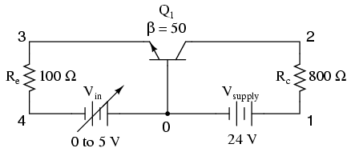
Este análisis barre el voltaje de entrada (Vin) de 0 a 5 voltios en incrementos de 0,1 voltios, luego imprime el voltaje entre los cables del colector y del emisor del transistor v(2,3). El transistor (Q1) es un NPN con una Beta directa de 50.
Lista de redes:
Common-base BJT amplifier vsupply 1 0 dc 24 vin 0 4 dc rc 1 2 800 re 3 4 100 q1 2 0 3 mod1 .model mod1 npn bf=50 .dc vin 0 5 0.1 .print dc v(2,3) .plot dc v(2,3) .end
Producción:
vin v(2,3) 0.000E+00 2.400E+01 1.000E-01 2.410E+01 2.000E-01 2.420E+01 3.000E-01 2.430E+01 4.000E-01 2.440E+01 5.000E-01 2.450E+01 6.000E-01 2.460E+01 7.000E-01 2.466E+01 8.000E-01 2.439E+01 9.000E-01 2.383E+01 1.000E+00 2.317E+01 1.100E+00 2.246E+01 1.200E+00 2.174E+01 1.300E+00 2.101E+01 1.400E+00 2.026E+01 1.500E+00 1.951E+01 1.600E+00 1.876E+01 1.700E+00 1.800E+01 1.800E+00 1.724E+01 1.900E+00 1.648E+01 2.000E+00 1.572E+01 2.100E+00 1.495E+01 2.200E+00 1.418E+01 2.300E+00 1.342E+01 2.400E+00 1.265E+01 2.500E+00 1.188E+01 2.600E+00 1.110E+01 2.700E+00 1.033E+01 2.800E+00 9.560E+00 2.900E+00 8.787E+00 3.000E+00 8.014E+00 3.100E+00 7.240E+00 3.200E+00 6.465E+00 3.300E+00 5.691E+00 3.400E+00 4.915E+00 3.500E+00 4.140E+00 3.600E+00 3.364E+00 3.700E+00 2.588E+00 3.800E+00 1.811E+00 3.900E+00 1.034E+00 4.000E+00 2.587E-01 4.100E+00 9.744E-02 4.200E+00 7.815E-02 4.300E+00 6.806E-02 4.400E+00 6.141E-02 4.500E+00 5.657E-02 4.600E+00 5.281E-02 4.700E+00 4.981E-02 4.800E+00 4.734E-02 4.900E+00 4.525E-02 5.000E+00 4.346E-02
vin v(2,3) 0.000E+00 1.000E+01 2.000E+01 3.000E+01 - - - - - - - - - - - - - - - - - - - - - - - - - - - - - - - - - - 0.000E+00 2.400E+01 . . . * . 1.000E-01 2.410E+01 . . . * . 2.000E-01 2.420E+01 . . . * . 3.000E-01 2.430E+01 . . . * . 4.000E-01 2.440E+01 . . . * . 5.000E-01 2.450E+01 . . . * . 6.000E-01 2.460E+01 . . . * . 7.000E-01 2.466E+01 . . . * . 8.000E-01 2.439E+01 . . . * . 9.000E-01 2.383E+01 . . . * . 1.000E+00 2.317E+01 . . . * . 1.100E+00 2.246E+01 . . . * . 1.200E+00 2.174E+01 . . . * . 1.300E+00 2.101E+01 . . .* . 1.400E+00 2.026E+01 . . * . 1.500E+00 1.951E+01 . . *. . 1.600E+00 1.876E+01 . . * . . 1.700E+00 1.800E+01 . . * . . 1.800E+00 1.724E+01 . . * . . 1.900E+00 1.648E+01 . . * . . 2.000E+00 1.572E+01 . . * . . 2.100E+00 1.495E+01 . . * . . 2.200E+00 1.418E+01 . . * . . 2.300E+00 1.342E+01 . . * . . 2.400E+00 1.265E+01 . . * . . 2.500E+00 1.188E+01 . . * . . 2.600E+00 1.110E+01 . . * . . 2.700E+00 1.033E+01 . * . . 2.800E+00 9.560E+00 . *. . . 2.900E+00 8.787E+00 . * . . . 3.000E+00 8.014E+00 . * . . . 3.100E+00 7.240E+00 . * . . . 3.200E+00 6.465E+00 . * . . . 3.300E+00 5.691E+00 . * . . . 3.400E+00 4.915E+00 . * . . . 3.500E+00 4.140E+00 . * . . . 3.600E+00 3.364E+00 . * . . . 3.700E+00 2.588E+00 . * . . . 3.800E+00 1.811E+00 . * . . . 3.900E+00 1.034E+00 .* . . . 4.000E+00 2.587E-01 * . . . 4.100E+00 9.744E-02 * . . . 4.200E+00 7.815E-02 * . . . 4.300E+00 6.806E-02 * . . . 4.400E+00 6.141E-02 * . . . 4.500E+00 5.657E-02 * . . . 4.600E+00 5.281E-02 * . . . 4.700E+00 4.981E-02 * . . . 4.800E+00 4.734E-02 * . . . 4.900E+00 4.525E-02 * . . . 5.000E+00 4.346E-02 * . . . - - - - - - - - - - - - - - - - - - - - - - - - - - - - - - - - - -
Common-source JFET amplifier with self-bias
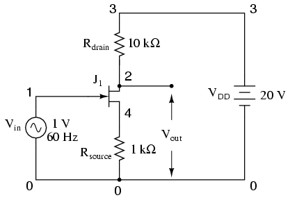
Lista de redes:
common source jfet amplifier vin 1 0 sin(0 1 60 0 0) vdd 3 0 dc 20 rdrain 3 2 10k rsource 4 0 1k j1 2 1 4 mod1 .model mod1 njf .tran 1m 30m .plot tran v(2,0) v(1,0) .end
Producción:
legend: *: v(2) +: v(1) time v(2) (*)--------- 1.400E+01 1.600E+01 1.800E+01 2.000E+01 2.200E+01 (+)--------- -1.000E+00 -5.000E-01 0.000E+00 5.000E-01 1.000E+00 - - - - - - - - - - - - - - - - - - - - - - - - - - - - - - - - - - 0.000E+00 1.708E+01 . . * + . . 1.000E-03 1.609E+01 . .* . + . . 2.000E-03 1.516E+01 . * . . . + . 3.000E-03 1.448E+01 . * . . . + . 4.000E-03 1.419E+01 .* . . . + 5.000E-03 1.432E+01 . * . . . +. 6.000E-03 1.490E+01 . * . . . + . 7.000E-03 1.577E+01 . * . . +. . 8.000E-03 1.676E+01 . . * . + . . 9.000E-03 1.768E+01 . . + *. . . 1.000E-02 1.841E+01 . + . . * . . 1.100E-02 1.890E+01 . + . . * . . 1.200E-02 1.912E+01 .+ . . * . . 1.300E-02 1.912E+01 .+ . . * . . 1.400E-02 1.890E+01 . + . . * . . 1.500E-02 1.842E+01 . + . . * . . 1.600E-02 1.768E+01 . . + *. . . 1.700E-02 1.676E+01 . . * . + . . 1.800E-02 1.577E+01 . * . . +. . 1.900E-02 1.491E+01 . * . . . + . 2.000E-02 1.432E+01 . * . . . +. 2.100E-02 1.419E+01 .* . . . + 2.200E-02 1.449E+01 . * . . . + . 2.300E-02 1.516E+01 . * . . . + . 2.400E-02 1.609E+01 . .* . + . . 2.500E-02 1.708E+01 . . * + . . 2.600E-02 1.796E+01 . . + * . . 2.700E-02 1.861E+01 . + . . * . . 2.800E-02 1.900E+01 . + . . * . . 2.900E-02 1.916E+01 + . . * . . 3.000E-02 1.908E+01 .+ . . * . . - - - - - - - - - - - - - - - - - - - - - - - - - - - - - - - - - -
Inverting op-amp circuit
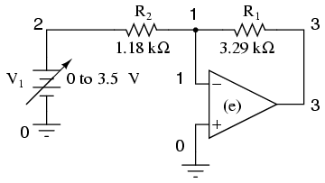
Para simular un amplificador operacional ideal en SPICE, utilizamos una fuente de voltaje dependiente del voltaje como amplificador diferencial con una ganancia extremadamente alta. El "e"La tarjeta configura la fuente de voltaje dependiente con cuatro nodos, 3 y 0 para salida de voltaje, y 1 y 0 para entrada de voltaje. No se necesita fuente de alimentación para la fuente de voltaje dependiente, a diferencia de un amplificador operacional real. La ganancia de voltaje se establece en 999,000 en este caso. La fuente de voltaje de entrada (V1) barre de 0 a 3,5 voltios en pasos de 0,05 voltios.
Lista de redes:
Inverting opamp v1 2 0 dc e 3 0 0 1 999k r1 3 1 3.29k r2 1 2 1.18k .dc v1 0 3.5 0.05 .print dc v(3,0) .end
Producción:
v1 v(3) 0.000E+00 0.000E+00 5.000E-02 -1.394E-01 1.000E-01 -2.788E-01 1.500E-01 -4.182E-01 2.000E-01 -5.576E-01 2.500E-01 -6.970E-01 3.000E-01 -8.364E-01 3.500E-01 -9.758E-01 4.000E-01 -1.115E+00 4.500E-01 -1.255E+00 5.000E-01 -1.394E+00 5.500E-01 -1.533E+00 6.000E-01 -1.673E+00 6.500E-01 -1.812E+00 7.000E-01 -1.952E+00 7.500E-01 -2.091E+00 8.000E-01 -2.231E+00 8.500E-01 -2.370E+00 9.000E-01 -2.509E+00 9.500E-01 -2.649E+00 1.000E+00 -2.788E+00 1.050E+00 -2.928E+00 1.100E+00 -3.067E+00 1.150E+00 -3.206E+00 1.200E+00 -3.346E+00 1.250E+00 -3.485E+00 1.300E+00 -3.625E+00 1.350E+00 -3.764E+00 1.400E+00 -3.903E+00 1.450E+00 -4.043E+00 1.500E+00 -4.182E+00 1.550E+00 -4.322E+00 1.600E+00 -4.461E+00 1.650E+00 -4.600E+00 1.700E+00 -4.740E+00 1.750E+00 -4.879E+00 1.800E+00 -5.019E+00 1.850E+00 -5.158E+00 1.900E+00 -5.297E+00 1.950E+00 -5.437E+00 2.000E+00 -5.576E+00 2.050E+00 -5.716E+00 2.100E+00 -5.855E+00 2.150E+00 -5.994E+00 2.200E+00 -6.134E+00 2.250E+00 -6.273E+00 2.300E+00 -6.413E+00 2.350E+00 -6.552E+00 2.400E+00 -6.692E+00 2.450E+00 -6.831E+00 2.500E+00 -6.970E+00 2.550E+00 -7.110E+00 2.600E+00 -7.249E+00 2.650E+00 -7.389E+00 2.700E+00 -7.528E+00 2.750E+00 -7.667E+00 2.800E+00 -7.807E+00 2.850E+00 -7.946E+00 2.900E+00 -8.086E+00 2.950E+00 -8.225E+00 3.000E+00 -8.364E+00 3.050E+00 -8.504E+00 3.100E+00 -8.643E+00 3.150E+00 -8.783E+00 3.200E+00 -8.922E+00 3.250E+00 -9.061E+00 3.300E+00 -9.201E+00 3.350E+00 -9.340E+00 3.400E+00 -9.480E+00 3.450E+00 -9.619E+00 3.500E+00 -9.758E+00
Noninverting op-amp circuit
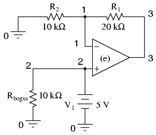
Otro ejemplo de una peculiaridad de SPICE: desde la fuente de voltaje dependiente "e"no se considera una carga para la fuente de voltaje V1, SPICE interpreta V1estar en circuito abierto y se negará a analizarlo. La solución es conectar Rfalsoen paralelo con V1para actuar como una carga de CC. Estar conectado directamente a través de V1, la resistencia de Rfalsono es crucial para el funcionamiento del circuito, por lo que 10 kΩ funcionarán bien. Decidí no barrer la V.1voltaje de entrada en este circuito para mantener simples la lista de red y la lista de salida.
Lista de redes:
noninverting opamp v1 2 0 dc 5 rbogus 2 0 10k e 3 0 2 1 999k r1 3 1 20k r2 1 0 10k .end
Producción:
node voltage node voltage node voltage ( 1) 5.0000 ( 2) 5.0000 ( 3) 15.0000
Instrumentation amplifier
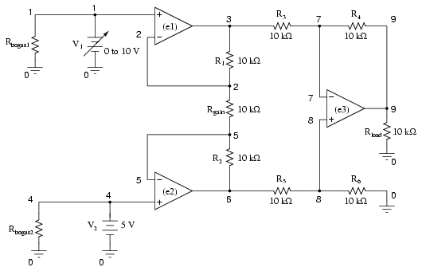
Tenga en cuenta la R de muy alta resistenciafalso1y rfalso2resistencias en la lista de red (no se muestran en el esquema por brevedad) en cada fuente de voltaje de entrada, para evitar que SPICE piense en V1y v2estaban en circuito abierto, al igual que los otros ejemplos de circuitos de amplificador operacional.
Lista de redes:
Instrumentation amplifier v1 1 0 rbogus1 1 0 9e12 v2 4 0 dc 5 rbogus2 4 0 9e12 e1 3 0 1 2 999k e2 6 0 4 5 999k e3 9 0 8 7 999k rload 9 0 10k r1 2 3 10k rgain 2 5 10k r2 5 6 10k r3 3 7 10k r4 7 9 10k r5 6 8 10k r6 8 0 10k .dc v1 0 10 1 .print dc v(9) v(3,6) .end
Producción:
v1 v(9) v(3,6) 0.000E+00 1.500E+01 -1.500E+01 1.000E+00 1.200E+01 -1.200E+01 2.000E+00 9.000E+00 -9.000E+00 3.000E+00 6.000E+00 -6.000E+00 4.000E+00 3.000E+00 -3.000E+00 5.000E+00 9.955E-11 -9.956E-11 6.000E+00 -3.000E+00 3.000E+00 7.000E+00 -6.000E+00 6.000E+00 8.000E+00 -9.000E+00 9.000E+00 9.000E+00 -1.200E+01 1.200E+01 1.000E+01 -1.500E+01 1.500E+01
Op-amp integrator with sinewave input
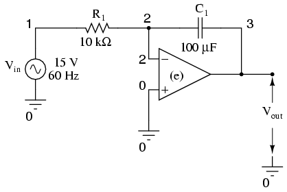
Lista de redes:
Integrator with sinewave input vin 1 0 sin (0 15 60 0 0) r1 1 2 10k c1 2 3 150u ic=0 e 3 0 0 2 999k .tran 1m 30m uic .plot tran v(1,0) v(3,0) .end
Producción:
legend: *: v(1) +: v(3) time v(1) (*)-------- -2.000E+01 -1.000E+01 0.000E+00 1.000E+01 (+)-------- -6.000E-02 -4.000E-02 -2.000E-02 0.000E+00 - - - - - - - - - - - - - - - - - - - - - - - - - - - - - - - - - - 0.000E+00 6.536E-08 . . * + . 1.000E-03 5.516E+00 . . . * +. . 2.000E-03 1.021E+01 . . . + * . 3.000E-03 1.350E+01 . . . + . * . 4.000E-03 1.495E+01 . . + . . *. 5.000E-03 1.418E+01 . . + . . * . 6.000E-03 1.150E+01 . + . . . * . 7.000E-03 7.214E+00 . + . . * . . 8.000E-03 1.867E+00 .+ . . * . . 9.000E-03 -3.709E+00 . + . * . . . 1.000E-02 -8.805E+00 . + . * . . . 1.100E-02 -1.259E+01 . * + . . . 1.200E-02 -1.466E+01 . * . + . . . 1.300E-02 -1.471E+01 . * . +. . . 1.400E-02 -1.259E+01 . * . . + . . 1.500E-02 -8.774E+00 . . * . + . . 1.600E-02 -3.723E+00 . . * . +. . 1.700E-02 1.870E+00 . . . * + . 1.800E-02 7.188E+00 . . . * + . . 1.900E-02 1.154E+01 . . . + . * . 2.000E-02 1.418E+01 . . .+ . * . 2.100E-02 1.490E+01 . . + . . *. 2.200E-02 1.355E+01 . . + . . * . 2.300E-02 1.020E+01 . + . . * . 2.400E-02 5.496E+00 . + . . * . . 2.500E-02 -1.486E-03 .+ . * . . 2.600E-02 -5.489E+00 . + . * . . . 2.700E-02 -1.021E+01 . + * . . . 2.800E-02 -1.355E+01 . * . + . . . 2.900E-02 -1.488E+01 . * . + . . . 3.000E-02 -1.427E+01 . * . .+ . . - - - - - - - - - - - - - - - - - - - - - - - - - - - - - - - - - -
Op-amp integrator with squarewave input
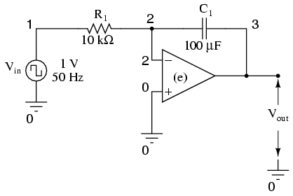
Lista de redes:
Integrator with squarewave input vin 1 0 pulse (-1 1 0 0 0 10m 20m) r1 1 2 1k c1 2 3 150u ic=0 e 3 0 0 2 999k .tran 1m 50m uic .plot tran v(1,0) v(3,0) .end
Producción:
legend: *: v(1) +: v(3) time v(1) (*)-------- -1.000E+00 -5.000E-01 0.000E+00 5.000E-01 1.000E+00 (+)-------- -1.000E-01 -5.000E-02 0.000E+00 5.000E-02 1.000E-01 - - - - - - - - - - - - - - - - - - - - - - - - - - - - - - - - - - 0.000E+00 -1.000E+00 * . + . . 1.000E-03 1.000E+00 . . + . * 2.000E-03 1.000E+00 . . + . . * 3.000E-03 1.000E+00 . . + . . * 4.000E-03 1.000E+00 . . + . . * 5.000E-03 1.000E+00 . . + . . * 6.000E-03 1.000E+00 . . + . . * 7.000E-03 1.000E+00 . . + . . * 8.000E-03 1.000E+00 . .+ . . * 9.000E-03 1.000E+00 . +. . . * 1.000E-02 1.000E+00 . + . . . * 1.100E-02 1.000E+00 . + . . . * 1.200E-02 -1.000E+00 * + . . . . 1.300E-02 -1.000E+00 * + . . . . 1.400E-02 -1.000E+00 * +. . . . 1.500E-02 -1.000E+00 * .+ . . . 1.600E-02 -1.000E+00 * . + . . . 1.700E-02 -1.000E+00 * . + . . . 1.800E-02 -1.000E+00 * . + . . . 1.900E-02 -1.000E+00 * . + . . . 2.000E-02 -1.000E+00 * . + . . . 2.100E-02 1.000E+00 . . + . . * 2.200E-02 1.000E+00 . . + . . * 2.300E-02 1.000E+00 . . + . . * 2.400E-02 1.000E+00 . . + . . * 2.500E-02 1.000E+00 . . + . . * 2.600E-02 1.000E+00 . .+ . . * 2.700E-02 1.000E+00 . +. . . * 2.800E-02 1.000E+00 . + . . . * 2.900E-02 1.000E+00 . + . . . * 3.000E-02 1.000E+00 . + . . . * 3.100E-02 1.000E+00 . + . . . * 3.200E-02 -1.000E+00 * + . . . . 3.300E-02 -1.000E+00 * + . . . . 3.400E-02 -1.000E+00 * + . . . . 3.500E-02 -1.000E+00 * + . . . . 3.600E-02 -1.000E+00 * +. . . . 3.700E-02 -1.000E+00 * .+ . . . 3.800E-02 -1.000E+00 * . + . . . 3.900E-02 -1.000E+00 * . + . . . 4.000E-02 -1.000E+00 * . + . . . 4.100E-02 1.000E+00 . . + . . * 4.200E-02 1.000E+00 . . + . . * 4.300E-02 1.000E+00 . . + . . * 4.400E-02 1.000E+00 . .+ . . * 4.500E-02 1.000E+00 . +. . . * 4.600E-02 1.000E+00 . + . . . * 4.700E-02 1.000E+00 . + . . . * 4.800E-02 1.000E+00 . + . . . * 4.900E-02 1.000E+00 . + . . . * 5.000E-02 1.000E+00 + . . . * - - - - - - - - - - - - - - - - - - - - - - - - - - - - - - - - - -
Lecciones en circuitos eléctricoscopyright (C) 2000-2023 Tony R. Kuphaldt, según los términos y condiciones delCC BY License.